Portfolio Guide
Table of Contents فهرس
Chapter 1 Present and justify a problem
Chapter 2 Generate and defend a solution
Chapter 3 Construct and test a prototype
Chapter 4 Evaluate and reflect
Introduction
The team’s Capstone portfolio represents the biography of the Capstone organized around the engineering design process EDP components.
الـCapstone Portfolio بتاع التيم هو" السيرة الذاتية " للـCapstone كلها، ومترتب على حسب مكونات الـ Engineering Design Process اللي هي الـEDP.
The Capstone portfolio is used as a source of information to prepare the Capstone Exhibition poster and contributes to the Capstone exhibition mark.
الـCapstone Portfolio بيتستخدم كمصدر للمعلومات اللي بتجهز منها الـCapstone Exhibition Poster ، وكمان بيدخل في درجة الـCapstone Exhibition .
Each team has one portfolio
The portfolio is used to gather information, both process and products, for each component of the engineering design process
الـPortfolio بيتستخدم عشان تجمع فيه المعلومات، سواء الـprocess (الخطوات اللي عملتوها) أو الـproducts (النتايج والمنتجات)، لكل مكوّن من مكونات الـEngineering Design Process .
Each team is assigned a TEAM NUMBER
Each team’s Portfolio Name MUST follow this format:
Year-Semester Number-Team Number
2021-1-Team Number (example for grade 1 group #7: 2021-1-07)
One team member sets up the portfolio following the Portfolio Template (see here: portfolio template) and makes sure all team members have access to the portfolio.
واحد من أعضاء التيم بيعمل الـPortfolio على حسب الـPortfolio Template ، ويتأكد إن كل أعضاء التيم عندهم access .عليه
It’s always better for the whole team to use a shared word file to save the wasted time of gathering the tasks of every member at the end of the semester
دايماً الأحسن إن التيمكله يشتغل علىword file مشترك(shared) ، عشان توفروا الوقت اللي بيضيع في آخر .الترم وانتوا بتجمعوا شغل كل واحد لوحده
Obligatory Rules قواعد إجبارية
Throughout writing the Capstone Portfolio, You Must follow these rules:
1) Follow the Capstone Portfolio Template and include a Table of Contents at the start.
امشي على الـCapstone Portfolio Template وحطTable of Contents في أول الـ Portfolio .
2) Validate your Ideas with statistics, graphs, figures. For example you said that electronic waste is increasing in high amounts every year, you must validate that information with statistics and graphs from Trusted Resources like Sites that ends with .gov .org .us .uk except wikipedia. try to avoid most of .com sites. Also, research papers (most of them are in .com or .net sites but that’s valid)
أثبت أفكارك بإحصائيات ورسوم بيانية وأشكال. يعني مثلاً لو قلت إنelectronic waste بيزيد بكميات كبيرة كل سنة، لازمتثبت المعلومة دي بإحصائيات وgraphs من مصادرموثوقة زي المواقع اللي بتخلص بـ.gov و.org و.us و.uk ، ماعداWikipedia . وحاول تبعد عن أغلب مواقع الـ .com .
والـresearch papers كمان مصادر كويسة (أغلبها موجود على مواقع.com أو.net بس ده .)مقبول
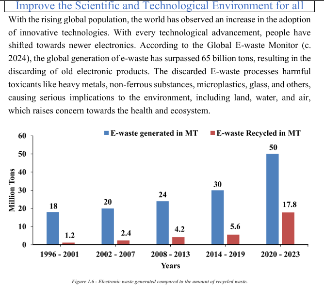
3) Number and label graphs, figures and tables (Label graphs and figures below them, but label tables above). Number in this format (Figure, Table or Graph, chapter’s number. The figure’s number). For example if you number the 5th Figure in the second chapter it will be Figure 2.5. notice that the number of the graph is independent of the number of tables or figures. So if you have a table after two figures and a graph it will still be Table 1.1. Label with one small sentence that illustrate what is shown in the figure as you can see in the previous picture.
رقّم وسمّي(label) الـgraphs والـfigures والـtables . الـlabel بتاع الـgraphs والـfigures بيتكتبتحتها ، أما الـtables فالـlabel بيتكتبفوقها . والترقيم بيكون بالشكل ده:Figure( أوTable أوGraph ، رقم الـchapter . رقم الشكل). يعني مثلاً لو بترقّم الـFigure الخامسة في الـchapter التاني هتبقىFigure 2.5 . وخلي بالك إن ترقيم الـgraphs مستقل عن ترقيم الـtables والـ figures ؛ يعني لو عندكtable جاي بعد اتنينfigures وgraph ، برضه هيبقىTable 1.1. والـ label .يبقى جملة صغيرة بتوضح الشكل بيعرض إيه، زي ما شايف في الصورة اللي فوق
4) Save all sites as you write because you will need to write them in APA7 format at the end of the portfolio. Send them in a group or save them in a word file as you please.
احفظ كل المواقع اللي بتاخد منها أول بأول، لأنك هتحتاج تكتبها بصيغةAPA7 في آخر الـPortfolio .
ابعتها على جروب أو احفظها فيword file ، زي ما تحب.
5) Cite as you write. write in text citation in APA7 format. You write according to the “organization” then in parentheses the Author (or the organization) and the date, then the statistic you can see in the aforementioned picture, or you can write the statistic first and following it in parentheses lies the Author or the organization and the date for example: (World Bank, 2022) or (Ahmed & Mohammed, 2019).
اعملcitation وانت بتكتب على طول. اكتب الـin-text citation بصيغةAPA7 : يا إما تكتب "according to" وبعدين بين قوسين اسم الـAuthor أو الـorganization والسنة، وبعدين الإحصائية (زي ما شايف في الصورة اللي فوق)، يا إما تكتب الإحصائية الأول وبعدها بين قوسين الـ Author الـأو organization :كدهزي والسنة، World( Bank,2022) أو (Ahmed&Mohammed,2019).
General Non Obligatory Tips نصايح عامة مش إجبارية
Throughout writing the Capstone Portfolio, some tips will help you:
1) Justify (as in "to click Ctrl+J") all body paragraphs.
2) Use Times New Roman as the primary font for the Capstone Portfolio
3) Set the body font size to 14 points in the Capstone Portfolio.
4) Write in the Passive and avoid using any personal pronouns (e.g., I, you, he, she, we, us, him, her, his, hers, its, theirs, our, and your).
اكتب بصيغة المبني للمجهول(Passive) وابعد خالص عن الضمائر الشخصية (زي:,I, you, he she, we, us, him, her, his, hers, its, theirs, our, your).
5) Make use of online grammar checkers (see Grammarly, which you can get as an add-in for Microsoft Word) to ensure the quality of your writing.
استخدم أدوات تصحيح القواعد اللي على النت (زيGrammarly ، وممكن تنزّله كـadd-in على Microsoft Word) .عشان تضمن جودة كتابتك
6) Do NOT plagiarise, and make sure your writing is original by using a plagiarism checker.
ماتعملش plagiarism (نقل حرفي)، واتأكد إن كتابتك أصلية باستخدامplagiarism checker.
7) Use multiple Examples To better illustrate your idea.
.استخدم أمثلة كتير عشان توضح فكرتك أحسن
Egypt Grand Challenges
Egypt Grand Challenges are the first things you begin working on in the portfolio and in general.
It lays the foundation for everything you work on moving forward, therefore you have to make sure you do it correctly to avoid any issues or setbacks in the future.
دي الأساس اللي هيتبني عليه كل حاجة بعد كده، عشان كده لازم تتأكد إنك عاملها صح عشان ماتقابلش مشاكل أو .تأخير قدام
The capstone challenge picks 4 mandatory grand challenges (out of 11) that you must discuss.
الـcapstone challenge بيحدد4 grand challenges إجبارية (من أصل)11 .لازم تتكلم عنهم
NOTE that you can not discuss less, but it is possible to discuss more than 4. However, going overboard with the amount can lead to more mistakes or possible disorder when moving to later sections (such as the section known as “problem to be solved” which connects all of them to a root cause)
خد بالك إنك ماينفعش تتكلم عن أقل من4 ، بس ينفع تتكلم عن أكتر. لكن لو زودتها أوي ممكن ده يوقعك في أخطاء أكتر أو لخبطة لما تيجي للأجزاء اللي بعد كده (زي الجزء اللي اسمه"problem to be solved" ، اللي بيربطهم كلهم بـroot cause .)واحد
Egypt’s 11 grand challenges are:
الـ11 grand challenges :بتوع مصر هما
1- Alternative Energies 2-Population Growth
3- Garbage and Waste/Recycling 4- Arid Areas
5- Urban Congestion 6- Environmental Pollution
7- Clean Water 8- Industrial and Agricultural Bases
9- Public Health 10- Science and Technology
11- Climate Change
For starters lets look at the necessary formatting and what you must discuss. First, you need to have an overview or introduction to the grand challenge, in there you discuss what it means, major concepts (for climate change for example explain the green house effect and how it works),and you set the pace for the next sections.
في البداية خلينا نشوف الشكل المطلوب والحاجات اللي لازم تتكلم عنها. أول حاجة لازم يكون عندكoverview أو مقدمة عن الـgrand challenge ، تشرح فيها يعني إيه، والمفاهيم الأساسية فيه (يعني مثلاً في الـclimate change تشرح الـgreenhouse effect .وبيشتغل إزاي)، وتمهّد للأجزاء اللي بعدها
Next up are the causes and impacts, these sections are crucial and basically the core of your starting argument. You must discuss at least 3 causes and 3 impacts, they aren’t interchangeable so you must have at least 6 total talking points at the end. It is strongly advised to interchange between “impact if the problem remains unsolved” and “impact if it did get solved” (note that you CAN NOT mention a solution or a possible method in any of these.) You can’t mention one point in both types of impacts, for example;
بعد كده تيجي الـcauses والـimpacts ، ودول أجزاء مهمة جداً وهما قلب الحجة اللي بتبدأ بيها. لازم تتكلم عن 3 causes على الأقل و3 impacts على الأقل، ومش بيتبدلوا مع بعض، يعني في الآخر لازم يكون عندك6 نقاط على الأقل. ويُفضّل جداً إنك تنوّع بين"impact if the problem remains unsolved" وimpact if it did"
get solved" (وخلي بالك إنكماينفعش تذكر أيsolution أو طريقة حل في أي نقطة منهم). وماينفعش تذكر نفس :النقطة في النوعين، زي المثال ده
“if this problem remains as is, we expect a rising trend in traffic and disease spread”
“if this problem gets solved, data trends suggest a decrease in road congestion and disease transmission”
These two are the same no matter how much you reword them so just look for a different talking point.
.الجملتين دول نفس الفكرة مهما غيّرت في صياغتهم، فدوّر على نقطة تانية مختلفة
In these two sections you MUST show urgency and keep your reader hooked and focused therefore, during your research you have to find the most engaging and interesting pieces of information. For example, if you are talking about population growth, don’t mention longer traffic times as an impact. Instead, mention the increased number of disease spread or malnutrition due to lack of resources.
في الجزئين دوللازم تبيّن إن الموضوع عاجل(urgency) وتفضل شادد انتباه القارئ ومركّزه؛ عشان كده وانت بتعملresearch لازم تدوّر على أكتر معلومات جذابة ومثيرة للاهتمام. يعني مثلاً لو بتتكلم عنpopulation growth ، ماتقولش إن زمن الزحمة المرورية زاد كـimpact ، لكن قول إن انتشار الأمراض زاد أو سوء التغذية .زاد بسبب نقص الموارد
If you haven’t noticed by now, they are called challenges but not straight up problems— population growth isn’t an issue, but it is challenging to keep up with it; if the necessary resources to satisfy needs aren’t available. So, you must avoid biases against a challenge even if you support solving it. Think about recycling for a moment, everyone advises to do it and obviously we would be biased towards it, but it would be advantageous to also discuss the economical challenges, financial drawbacks and educational deficiency in regards to recycling. This could help push your discussion from just finding a solution, to finding a genuine applicable solution that could overcome these issues, a quick tip and nice way to stay on track is to imagine someone arguing and debating every sentence you type. You will have to discuss these individual issues in later sections (predominantly Chapter 2)
لو ماكنتش لاحظت لحد دلوقتي، دي اسمهاchallenges مشproblems على طول. الـpopulation growth في حد ذاته مش مشكلة، لكن التحدي هو إننا نلاحق عليه لو الموارد اللي بتسد الاحتياجات مش متوفرة. عشان كده لازم تبعد عن التحيّز ضد أيchallenge حتى لو انت مع حله. فكّر في الـrecycling مثلاً: الكل بينصح بيه وأكيد هنبقى متحيزين ليه، بس هيبقى في صالحك إنك تتكلم كمان عن التحديات الاقتصادية والعيوب المادية ونقص التوعية المرتبطين بيه. ده ممكن ينقل كلامك من مجرد "إيجاد حل" لـ "إيجاد حل حقيقي قابل للتطبيق" يتغلب على المشاكل دي. ونصيحة سريعة تخ ليك ماشي صح: تخيّل إن فيه حد بيجادلك في كل جملة بتكتبها. وهتحتاج تتكلم عن المشاكل دي بالتفصيل في أجزاء بعد كده (غالباً في)Chapter 2 .
Lastly, Justification/Reasoning. This section is optional and not mandatory whatsoever. In this one you can build up the argument to why you believe it is necessary to look into a solution for this grand challenge or pursue it in terms of future aspirations. You can separate your “impacts if problem is solved” under this section and mix them around with some qualitative data as well as articles regarding future plans or investigations of growing trends.
وأخيراً الـJustification/Reasoning ، والجزء ده اختياري ومش إجباري خالص. فيه بتبني الحجة ليه شايف إنه ضروري ندوّر على حل للـgrand challenge ده، أو ليه تكمّل فيه من ناحية الطموحات المستقبلية. وممكن تحط الـ"impacts if problem is solved" تحت الجزء ده، وتخلطها بشويةqualitative data ومقالات عن .الخطط المستقبلية أو دراسات عن الاتجاهات اللي بتزيد
When you first begin research in regard to the specific topic and grand challenge there are some general ground rules that we recommend following to make it as efficient as possible:
أول ما تبدأ الـresearch عن الموضوع والـgrand challenge ، فيه شوية قواعد عامة بننصح بيها عشان تخلي :شغلك أكفأ ما يمكن
(1) Quantitative data > Qualitative data. When discussing topics such as population
growth and urban congestion saying that “most streets are crowded and full of traffic” isn’t as strong as “The population density in Egypt reached 118 citizens/Km2 with only 7.7% of Egypt’s area being actually occupied”.
Quantitative data > Qualitative data ، يعني الأرقام أقوى من الوصف. لما تتكلم عن مواضيع زيpopulation growth وurban congestion ، إنك تقول "most streets are crowded and full of traffic"
مش قوية زي إنك تقول "The population density in Egypt reached 118 citizens/Km² with only 7.7% of Egypt’s area being actually occupied" .
(2) Referencing and comparing. If you noticed just now, it isn’t clear how bad Egypt’s
population distribution is, it makes you ask the question “how bad is this?” or wonder what it really means, that is why it is really beneficial to cite standards presented by the United Nations, for example;
Referencing and comparing (الرجوع لمعيار والمقارنة بيه). لو لاحظت دلوقتي، مش واضح قد إيه توزيع السكان في مصر وحش؛ الرقم لوحده بيخليك تسأل "طب ده وحش لدرجة إيه؟" أو تستغرب :هو يعني إيه أصلاً. عشان كده مفيد جداً إنك تستشهد بالمعايير اللي بتحطها الأمم المتحدة مثلاً، زي كده
“The United Nations stated that the safe maximum population density for a country with Egypt’s resources should average around 90 citizens/Km2 which means our population density is over the standard by 20+ citizens/Km2”
For other topics like pollution, you might find yourself citing different types of data like annual death rates or death causes due to a specific issue, these don’t need any type of comparison to a certain standard because it is very intuitive that you wouldn’t want anyone dying due to unnatural causes or circumstances.
في مواضيع تانية زيpollution ممكن تلاقي نفسك بتستشهد بأنواع تانية من الداتا، زي معدلات الوفيات السنوية أو أسباب الوفاة بسبب مشكلة معينة. دي مش محتاجة مقارنة بمعيار معين، لأنه طبيعي ومفهوم إنك مش عايز حد يموتمهما كانت الأ سباب أو ظروف غير طبيعية.
(3) Illustrations and Figures. These are mostly mandatory but very easy to complete.
Any type of figure or table—that helps illustrate the urgency or help a reader visualize and render the concept better—works. These could come in the form of a graph showcasing a study you cited for its quantitative data, an image that helps explain a concept, or a qualitative image beside a piece of data to give more clarity. A few examples are shown in the following figures:
Illustrations and Figures (الرسومات والأشكال). دي غالباً إجبارية بس سهلة جداً. أيfigure أوtable بيساعد يوضح إن الموضوع عاجل، أو بيساعد القارئ يتخيّل ويفهم الفكرة أحسن، ينفع. ممكن تكونgraph بيعرض دراسة استشهدت بالـquantitative data ،بتاعتها، أو صورة بتشرح مفهوم :أو صورة توضيحية جنب رقم معين عشان توضحه أكتر. وفيه أمثلة في الأشكال اللي تحت
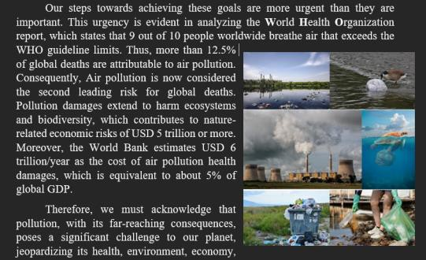
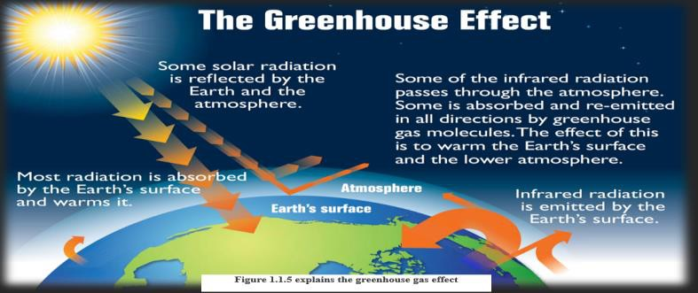
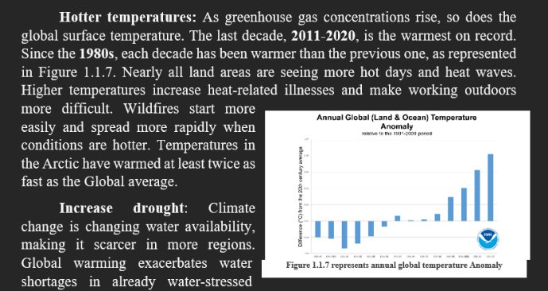
Problem To Be Solved
This is the second section following the grand challenges. This is arguably more important than the grand challenges because failure to complete this concisely will most likely spiral into more mistakes further down the line. In general the problem to be solved should be addressing the following questions:
ده الجزء التاني بعد الـgrand challenges ، وممكن نقول إنه أهم منهم كمان، لأن لو ماعملتوش بشكل دقيق ومختصر غالباً هيجرّ وراه أخطاء أكتر قدام. وبشكل عام الـproblem to be solved لازم يجاوب على الأسئلة :دي
What specific problem are you addressing?
إيه المشكلة المحددة اللي انت بتتعامل معاها؟
What are the impacts or consequences that are related to dealing with that problem?
إيه الـimpacts أو النتايج المرتبطة بالتعامل مع المشكلة دي؟
Explain The major positive -if problem solved- and negative -if not solved- impacts (also can be useful in journals)
اشرح أهم الـimpacts الإيجابية (لو المشكلة اتحلت) والسلبية (لو ماتحلتش) (ودي كمان ممكن تفيدك في الـ)journals .
There is a common misunderstanding of the difference between Grand Challenges and the problem to be solved. Egypt’s Grand Challenges can contain many sub- problems that are technically obsolete and practically impossible to completely solve or wipe the stain the left on Egypt.
فيهلبس شائع في الفرق بين الـGrand Challenges والـproblem to be solved . الـEgypt Grand Challenges ممكن يكون جواهاsub-problems كتير، فرعية ومتشعبة، ومن المستحيل عملياً إنها تتحل بالكامل .أو إنك تمسح أثرها اللي سابته على مصر
On the other hand, the problem to be solved is a specific problem that can be a connection between more than one Grand Challenge or a sub-problem from a Grand Challenge which can be considerably solved if enough effort and work is dedicated. That’s why we start with the grand challenges, we discuss them and connect them to a root cause, that is presumably our problem to be solved.
على الناحية التانية، الـproblem to be solved هي مشكلةمحددة ممكن تكونحلقة وصل بين أكتر منGrand Challenge ، أوsub-problem منGrand Challenge واحد، وممكن تتحل بدرجة كبيرة لو اتبذل فيها مجهود وشغل كفاية. وعشان كده بنبدأ بالـgrand challenges : بنتكلم عنهم ونربطهم بـroot cause ، والـroot cause ده غالباً هو الـproblem to be solved .بتاعنا
Think of it like this, you have two factories, one produces one byproduct and the other produces 4 byproducts, it would be better to fix the second one to limit its dangers and side effects on its environment.
فكّر فيها كده: عندك مصنعين، واحد بيطلعbyproduct واحد، والتاني بيطلع4 byproducts ؛ أكيد الأحسن إنك .تصلّح التاني عشان تقلل خطره وآثاره الجانبية على البيئة اللي حواليه
For example, in G11 S1 we had four main Grand challenges in the challenge:
مثلاً فيG11 S1 كان عندنا4 Grand challenges أساسيين في الـchallenge :
1. Improve the scientific and technological environment for all.
2. Address and reduce pollution fouling our air, water, and soil.
3. Reduce and adapt to the effects of climate change.
4. Recycle garbage and waste for economic and environmental purposes.
And the challenge was making a fully functional device that can be used in school labs utilizing scraps from old discarded devices. So, labeling “Improve the scientific and technological environment for all” as our problem to be solved is very broad and inaccurate. The average reader would not recognize what specific problem I am solving. So instead, we chose found a stronger label which was “wasting electronics containing heavy, hazardous metals, resulting in much pollution,”. It works well because it is much more specific and connects all 4 of the grand challenges with each other.
والـchallenge كان إننا نعمل جهاز شغال بالكامل ينفع يتستخدم في معامل المدرسة، ونستخدم فيه خُردة من أجهزة قديمة مرمية. فلوسمّينا الـproblem to be solved بتاعتناImprove the scientific and technological"
environment for all" هيبقى كلامواسع جداً ومش دقيق، والقارئ العادي مش هيعرف إيه المشكلة المحددة اللي بنحلها. فبدل كده اخترنا تسمية أقوى وهي,wasting electronics containing heavy, hazardous metals"
resulting in much pollution" ، ودي نفعت لأنها محددة أكتر بكتير وبتربط الـ4 grand challenges .ببعض
The problem to be solved is split into 4 divisions: الـProblem to be solved بيتقسم لـ4 أجزاء
Overview
What specific problem are you addressing?
إيه المشكلة المحددة اللي انت بتتعامل معاها؟
This is the first question for you to address and in here you introduce the whole problem to be solved.
ده أول سؤال لازم تجاوب عليه، وفيه بتقدّم الـproblem to be solved .كلها
You can use multiple paragraphs in the "Overview" section; however, you should avoid writing figures, tables, or equations in it (That does not mean avoiding evidence. Statistics must appear inside the text with APA 7 in-text citations.).
ينفع تكتب كذا فقرة في جزء الـOverview ، بس ابعد عن إنك تحط فيهfigures أوtables أو equations (ودهمش معناه إنك تبعد عن الأدلة؛ الإحصائيات لازم تيجي جوه الكلام نفسه ومعاها APA 7 in-text citations).
Try starting with the broad idea of two or three main Egypt Grand Challenges and then arriving at a more specific idea by mentioning the main connection between these Grand Challenges. Then, you would try to make this connection more specific to reach the Problem to Be Solved. Your goal is to pave the way for the upcoming parts.
حاول تبدأ بالفكرة العامة لاتنين أو تلاتة من الـEgypt Grand Challenges الأساسيين، وبعدين توصل لفكرة أدق لما تذكر حلقة الوصل الأساسية بين الـGrand Challenges دول. وبعد كده تحاول تخلي حلقة الوصل دي أكثر تحديداً لحد ما توصل للـProblem to Be Solved . هدفك إنك .تمهّد للأجزاء اللي جاية
State the problem in one sentence.
.اكتب المشكلة في جملة واحدة
End the Overview with one clear sentence, written in bold, following this template:
اختم الـOverview بجملة واحدة واضحة، مكتوبةbold ، ماشية على الـtemplate :ده
The problem to be solved is [the harmful condition] affecting [who or where in Egypt], caused by [the main driver], resulting in [measurable harm].
This exact sentence must then be reused, word for word, in the Abstract and the Introduction in the capstone poster.
الجملة دي بالظبط لازم تتكرر بعد كده، كلمة بكلمة، في الـAbstract والـIntroduction بتوع الـ capstone poster.
Justification of the problem
This part is practically mandatory, but it is optional in the sense that you can split it into its own division (justification), other than that, it is basically an extension to the overview.
الجزء ده عملياً إجباري، بس اختياري بمعنى إنك ممكن تفصله في جزء لوحده اسمهjustification ؛ غير كده هو امتداد للـoverview.
After you’ve completed the overview you should begin discussing why you chose this problem in particular. Mention its importance and severity and how its influence or impact affects a broad number of people and locations specific to Egypt.
بعد ما تخلص الـoverview تبدأ تتكلم ليه اخترت المشكلة ديبالذات . اذكرأهميتها وخطورتها ، .ًوإزاي تأثيرها بيطول عدد كبير من الناس وأماكن كتير في مصر تحديدا
Positive impacts,
Explain the major positive (if the problem is solved), this count as issues that are predicted to stop once the problem is dealt with or possible advantage that could arise in general. For example “solving the food shortage in Egypt could allow workers to have more energy and capacity for work, as studies show, well fed workers exert a 15% higher efficiency at work, which also makes sense biologically.”
اشرح أهم الـimpacts الإيجابية (لو المشكلة اتحلت)، ودي بتشمل المشاكل المتوقع إنها تقف لما ًالمشكلة تتحل، أو أي مميزات ممكن تظهر بشكل عام. مثلا:solving the food shortage in" Egypt could allow workers to have more energy and capacity for work, as studies show, well fed workers exert a 15% higher efficiency at work, which also makes sense biologically."
listing 3-4 positive consequences (each in a paragraph). Do not write the impact by itself explaining it in at least 2-3 lines.
اكتب من3 لـ4 نتايج إيجابية (كل واحدة في فقرة). وماتكتبش الـimpact لوحده، لازم تشرحه في سطرين لتلاتة على الأقل .
Negative consequences
Discuss the possible and predicted negative (if the problem is not solved)
consequences. These are based on things that are already happening not literally only going to happen in the future; an increase or them staying in effect are probable and plausible points. For example, “If food shortage isn’t dealt with, it is predicted that the [30 deaths per 1000 citizens] death rates due to starvation and malnutrition will keep on existing with the possible chance of increasing as demand ultimately increases with supplies decreasing ever so slowly.”
اتكلم عن النتايج السلبية المحتملة والمتوقعة (لو المشكلة ماتحلتش). ودي مبنية على حاجات بتحصل فعلاً دلوقتي، مش حاجات هتحصل في المستقبل بس؛ يعني إنها تزيد أو تفضل مستمرة ده كلام منطقي :ًمثلاومقبول.
"If food shortage isn’t dealt with, it is predicted that the [30 deaths per 1000 citizens] death rates due to starvation and malnutrition will keep on existing with the possible chance of increasing as demand ultimately increases with supplies decreasing ever so slowly."
Mention 3-4 negative consequences (each in a paragraph) whilst explaining each one well enough in at least 2-3 lines.
اذكر من3 لـ4 نتايج سلبية (كل واحدة في فقرة) واشرح كل واحدة كويس في سطرين لتلاتة على .الأقل
Important notes: ملاحظات مهمة
Avoid using multiple paragraphs, figures, or tables in a single consequence.
ابعد عن إنك تكتب كذا فقرة أوfigures أوtables فيconsequence .واحدة
Avoid repeating the same impact in positive and negative forms and just inverting it. For example, do not mention "Reduced Greenhouse Emissions" as a positive consequence and then mention "Greenhouse Effect" as a negative consequence.
ابعد عن تكرار نفس الـimpact في الشكل الإيجابي والسلبي وخلاص تقلبه. يعني مثلاً ماتذكرش "Reduced Greenhouse Emissions" كـpositive consequence وبعدين تذكر "Greenhouse Effect" كـnegative consequence.
Positive impacts are not the advantages of your prototype. This section describes what improves in Egypt if the problem is solved by any means, by anyone. Writing "our device is cheap and portable" here is a scope error; that belongs to Selection of Solution
الـPositive impacts مش هي مميزات الـprototype .بتاعك الجزء ده بيوصف إيه اللي هيتحسن في مصر لو المشكلة اتحلت بأي طريقة وعلى إيد أي حد. لو كتبت هناour device is"
cheap and portable" تبقى غلطت في النطاق(scope error) * ؛ الكلام ده مكانه فيSelection of Solution* .
you must include statistical information to back up your claims and strengthen your points. If you simply go “our problem to be solved is CO2 emissions because people die due to intoxication”, that wont be sufficient compared to “our problem to be solved is CO2 emissions as they are a primary cause in the intoxication and death of 27.3 people for every 1000 people.”
لازم تحط معلومات إحصائية تدعم كلامك وتقوّي نقاطك. لو قلت ببساطة "our problem to be solved is CO₂ emissions because people die due to intoxication" مش هيبقى كفاية، مقارنة بـ "our problem to be solved is CO₂ emissions as they are a primary cause in the intoxication and death of 27.3 people for every 1000 people."
Graphs and figures in the positive and negative consequences are highly advised and technically mandatory. They also help the reader get a better sense of urgency and severity whilst helping them understand through visuals.
الـgraphs والـfigures في الـpositive والـnegative consequences ًمنصوح بيها جدا .وتقريباً إجبارية. وكمان بتساعد القارئ يحس أكتر بالعجلة والخطورة، وبتسهّل عليه الفهم بالصور
Research
Research here means one of two things:
Documenting concepts/problems/ideas/devices you search about
.توثيق المفاهيم/المشاكل/الأفكار/الأجهزة اللي بتدوّر عليها
Documenting results from little thought processes, operations and or simulations you run.
توثيق نتايج تفكير بسيط أو عمليات أوsimulations .بتعملها
Research is a really flexible section, meaning that it just requires you to just know what you’re writing about and requires you on your own to know what you want to write about and how to divide one topic into multiple, simpler topics.
الـResearch جزء مرن *جداً*؛ يعني هو محتاج منك بس إنك تكون فاهم انت بتكتب عن إيه، وإنك بنفسك تعرف .عايز تكتب عن إيه، وإزاي تقسّم موضوع واحد لكذا موضوع أبسط
When starting off your research, you’ll probably want to write about your design requirements, and keywords used in the challenge file, this makes sense because that way you’ll be able to cover the most vast ground in relation to the challenge so that you have a deeper understanding on what to research later.
في بداية الـresearch غالباً هتحب تكتب عن الـdesign requirements والـkeywords اللي في الـ challenge file ، وده منطقي لأنك كده هتغطي أوسع مساحة مرتبطة بالـchallenge ، فيبقى عندك فهم أعمق للي محتاج تعمل عنهresearch .بعد كده
Later during your research, you might encounter a simulation application/mathematical model/predictive model, using one of the three, you can experiment with your prototype and gain valuable information regarding your prototype. An example of this was using a bridge simulation application to find out which truss frame shape is generally better for a bridge, a rectangular or a square frame; I tried both, documented the results into tables recorded in the Research section, and gave a definitive conclusion relating to the research or result given by the simulation app.
بعد كده وانت بتعملresearch ممكن تقابلsimulation application أوmathematical model أو predictive model ؛ وباستخدام أي واحد منهم تقدر تجرّب على الـprototype .بتاعك وتطلع بمعلومات قيّمة عنه مثال على كده: استخدامbridge simulation application عشان نعرف أنهي شكلtruss frame أحسن للكوبري ًعموما،rectangular ولاsquare frame ؛ جرّبت الاتنين، ووثّقت النتايج فيtables في جزء الـResearch ، وطلعت باستنتاج نهائي مرتبط بالـresearch أو بالنتيجة اللي طلعها الـsimulation app.
Research about the problem looks like this, for example: مثال
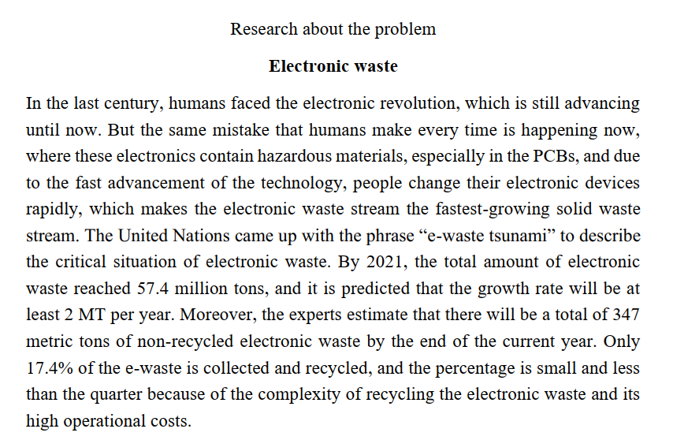
When researching about your prior solutions, you’ll definitely want to find out their scientific base, or when you’ve come to terms with your team on a solution, you’ll want to research the scientific base upon which the solution works, examples of this are:
لما تعملresearch عن الـprior solutions أكيد هتحب تعرف الـscientific base ،)بتاعتها (الأساس العلمي أو لما تتفق مع التيم علىsolution هتحب تعملresearch عن الأساس العلمي اللي الحل ده شغال عليه. وأمثلة :على ده
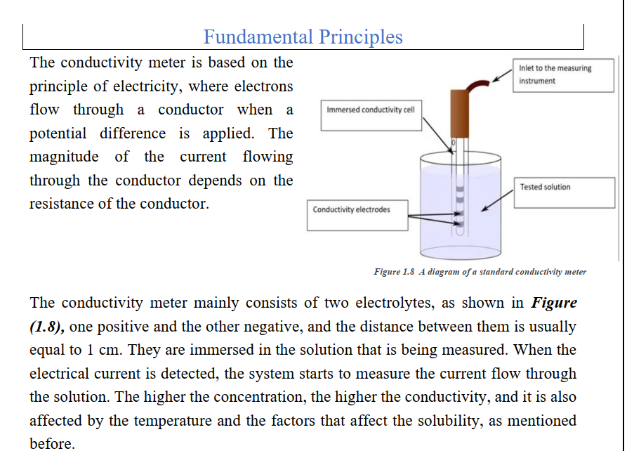
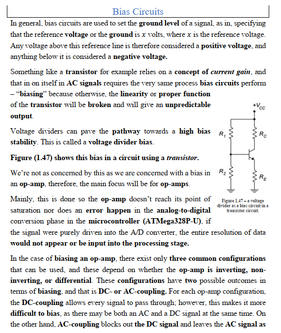
When researching, you need to look into unconventional places. You’re going to want to search in research papers, use archive.org for offline pages/pages that have been taken down, forums (engineering forums, something like stack overflow, etc., etc.,).
وانت بتعملresearch لازم تدوّر في أماكن مش تقليدية. هتحتاج تدوّر في الـresearch papers ، وتستخدم archive.org للصفحات اللي اتشالت أو مابقتش أونلاين، والـforums (زيengineering forums ، أو حاجة زيStack Overflow ، وهكذا).
When doing experiments or documenting results, you’ll need to write how to actually perform those methods and or discover how to do these methods, which you’ll most likely document in the research section aswell.
لما تعمل تجارب أو توثّق نتايج، هتحتاج تكتب إزاي تنفّذ الطرق دي فعلاً، أو تكتشف إزاي تعملها، وده غالباً هتوثّقه في جزء الـresearch .برضه
NOTE: The research section is heavily variable between teams and writing styles differ between team members themselves, variation is 100% bound to happen in the research section.
:ملحوظة جزء الـresearch ،بيختلف جداً من تيم للتاني، وأسلوب الكتابة بيختلف حتى بين أعضاء التيم نفسه فالاختلاف في جزء الـresearch هيحصل100%.
Areas to reconsider doing research for: المجالات اللي تعمل عليها Research
1- Research about the problem
Research .عن المشكلة
2- Research about the scientific base
Research عن الأساس العلمي(scientific base) .
3- Research about used materials and other components you didn’t use
Research .عن الخامات المستخدمة والمكونات التانية اللي ماستخدمتهاش
4- Research about other methods and solutions
Research .عن الطرق والحلول التانية
5- Research about construction methods and used tools and circuitry
Research .عن طرق التصنيع والأدوات والدواير الكهربية المستخدمة
Prior solutions/other solutions already tried
This is the fourth section for you to start working on. It is advised to complete this section over the first 3-4 weeks of capstone work.
ده الجزء الرابع اللي تبدأ تشتغل عليه، ومنصوح إنك تخلصه في أول3-4 أسابيع من شغل الـcapstone .
Although this section is moderately simple, you must not let this simplicity distract you from its shear importance. In general, you are expected to discuss and write about 3-4 prior solutions, writing about more is allowed but not advised [you must spend your time carefully on what is deemed mandatory for you work on instead.]
ورغم إن الجزء ده بسيط نسبياً، ماتخليش بساطته تلهيك عن أهميته الكبيرة. وبشكل عام المتوقع منك إنك تتكلم وتكتب عن3-4 prior solutions ؛ الكتابة عن أكتر مسموحة بس مش منصوح بيها [لازم تصرف وقتك بحرص على .]الحاجات الإجبارية اللي مطلوب تشتغل عليها بدل كده
Overall structure: الهيكل العام
Overview
Opening line about the solution, you must introduce it well refrain from any type of biases with or against it.
.جملة افتتاحية عن الحل؛ لازم تقدّمه كويس وتبعد عن أي نوع من التحيز معاه أو ضده
Discuss the meta data regarding this solution. (Location, date of completion, goal, and stats regarding its products or byproducts)
اتكلم عن الـmetadata بتاعة الحل ده (المكان، تاريخ التنفيذ، الهدف، وإحصائيات عن الـproducts أو الـbyproducts .)بتاعته
Mechanism
This is the most important division. You must mention—in light details—how the project works or how it was designed.
.ده أهم جزء. لازم تذكر، بتفاصيل خفيفة، المشروع بيشتغل إزاي أو اتصمم إزاي
Discuss how the project makes up for different issues. For example, if it is a recycling site, try and mention how it deals with byproducts or carbon dioxide emissions.
اتكلم إزاي المشروع بيعالج مشاكل مختلفة. مثلاً لو ده موقعrecycling ، حاول تذكر بيتعامل إزاي مع الـbyproducts .أو انبعاثات ثاني أكسيد الكربون
Use chronological and process-based writing styles. This section must be simplified for the reader to understand so omit any type of “personality” in your writing and focus on mundane information delivery.
استخدم أسلوب كتابة زمني ومتسلسل حسب الخطوات(chronological and process-based) . الجزء ده لازم يكون مبسّط عشان القارئ يفهمه، فشيل أي "شخصية" من كتابتك وركّز على توصيل .المعلومة بشكل مباشر وعادي
Strengths
In this division, you must mention what makes the project stand out or what part of the project is beneficial. For example, high environmental friendliness or high recycling yield.
في الجزء ده لازم تذكر إيه اللي بيميّز المشروع أو أنهي جزء فيه مفيد. مثلاً إنه صديق للبيئة جداً أو إن الـrecycling yield .بتاعه عالي
Must not be a subjective opinion, you have to focus on objective statistics and data. Therefore, you can’t simply say it looks good or fits its surroundings, however, if mentioned by professionals it is possible. For example, the tower bridge is built in a neo-gothic style to match that of the London Tower. This helps it not stick out and can serve as a tourist attraction, expanding on its function from a simple congestion relief or connection to a sight-seeing spot.
ماينفعش يكون رأي شخصي؛ لازم تركّز على إحصائيات وبيانات موضوعية. يعني ماينفعش تقول ًببساطة إن شكله حلو أو ماشي مع المكان اللي حواليه، إلا لو ده كلام متخصصين. مثلا:the tower" bridge is built in a neo-gothic style to match that of the London Tower. This helps it not stick out and can serve as a tourist attraction, expanding on its function from a simple congestion relief or connection to a sight-seeing spot."
You must mention at least 3 strengths. You may expand to more than 3 and how it could be beneficial will be discussed forward.
لازم تذكر3 نقاط قوة على الأقل. وممكن تزود عن3 ، وإزاي ده ممكن يفيدك هنتكلم عنه بعدين.
Weaknesses
This is the final division; therefore, it must leave a strong impression.
.ده آخر جزء، فلازم يسيب انطباع قوي
Mention where and how the solution fails to sustain good results. This must also include statistical data and information. For example, you can mention pricing, maintenance costs, low sustainability, percentage of byproducts and environmental impacts (if they are negative impacts of course)
اذكر فين وإزاي الحل بيفشل إنه يحافظ على نتايج كويسة. وده كمان لازم يكون فيه بيانات ومعلومات إحصائية. مثلاً ممكن تذكر السعر، تكاليف الصيانة، ضعف الاستدامة، نسبة الـbyproducts ، والآثار .)ًالبيئية (لو كانت سلبية طبعا
Must also mention 3 points. Expansion is allowed.
لازم برضه تذكر3 .نقاط، ومسموح تزود
Important Notes: ملاحظات مهمة
Solutions don’t have to be native to Egypt as long as they solve the problem you mentioned in earlier sections.
.الحلول مش لازم تكون من مصر، طالما بتحل المشكلة اللي ذكرتها في الأجزاء اللي فاتت
When working on later sections such as the solution and design requirements you will have to keep this section in mind. Meaning that you must strive for your project to have as many strengths and as little weaknesses as possible referring to these prior solutions as reference. For example, if you notice mostly successful solutions were energy efficient and didn’t interfere with the environments it is beneficial to have this in your requirements as well. This goes for design and mechanism if it is truly beneficial.
لما تشتغل على الأجزاء اللي بعد كده زي الـsolution and design requirements ، لازم تفتكر الجزء ده كويس. يعني تسعى إن المشروع بتاعك يكون فيه أكبر عدد من نقاط القوة وأقل عدد من نقاط الضعف، وتستخدم الـprior solutions دي كمرجع. مثلاً لو لاحظت إن أغلب الحلول الناجحة كانت موفّرة في الطاقة ومابتأثرش على البيئة اللي حواليها، يبقى مفيد تحط ده في الـrequirements بتاعتك انت كمان. ونفس الكلام في الـdesign والـmechanism .ًلو كان مفيد فعلا
It is important to include figures in the overview and mechanism divisions to maintain a visual representation and keep the reader’s attention
مهم تحطfigures في جزئي الـoverview والـmechanism عشان يبقى فيه تمثيل مرئي وتفضل .شادد انتباه القارئ
Take genuine inspiration from these prior solutions don’t just do it for the portfolio and later sections. Your project doesn’t have to be completely original, you can reference other projects, and it strengthens your project if you learn from others and apply with probable scientific reasons backing you up.
خد إلهام حقيقي من الـprior solutions دي، ماتعملهاش عشان الـportfolio والأجزاء اللي بعدها وبس. المشروع بتاعك مش لازم يكون أصلي100% ؛ ممكن ترجع لمشاريع تانية، وده بيقوّي مشروعك .لو اتعلمت من غيرك وطبّقت بأسباب علمية منطقية تسندك
Solution and Design Requirements
This is the 5th section for you to work on and is quite intuitive and easy.
.ده الجزء الخامس اللي تشتغل عليه، وهو سهل ومنطقي
You start with an overview or a little introduction to make the topic a little natural. In there you mention the importance of setting ground rules and goals in the form of requirements to quantify the projects results and capabilities.
بتبدأ بـoverview أو مقدمة صغيرة عشان تدخل للموضوع بشكل طبيعي. وفيها بتذكر أهمية إنك تحط قواعد وأهداف أساسية في شكلrequirements .عشان تقيس نتايج المشروع وقدراته بالأرقام
You have two types of requirements (other than the clear distinction between solution and design ones)
عندك نوعين من الـrequirements (غير الفرق الواضح بين الـsolution requirements والـdesign requirements) :
1- Mandatory ones mentioned in the Challenge paper.
الإجبارية اللي مذكورة في الـChallenge paper .
a. You MUST follow these and make sure your solution satisfies them as it is
part of the aspects your project is graded upon. These include weight, length, volume and others specifications
لازم تلتزم بيها وتتأكد إن الحل بتاعك بيحققها، لأنها جزء من الحاجات اللي مشروعك بيتقيّم عليها. ودي .بتشمل الوزن والطول والحجم ومواصفات تانية
b. Please make the clear distinction between requirements and rules
mentioned in the challenge. You will find that some parts mention testing is to be done under supervision and in a specific setting. This isn’t a requirement in the design or solution, it is simply a regulation of safety.
لو سمحت فرّق بوضوح بين الـrequirements والـrules المذكورة في الـchallenge . هتلاقي أجزاء بتقول إن الاختبار لازم يتعمل تحت إشراف وفي ظروف معينة؛ ده مشrequirement في الـ design أو الـsolution ، ده مجرد قاعدة أمان.
2- Optional and strengthening ones
.الاختيارية اللي بتقوّي المشروع
a. These are the requirements you deduce on your own from your research
and prior solutions. As much as it may not seem important to have more since they are optional, it is still very important to include new ones to showcase your interest in achieving the best possible results.
دي الـrequirements اللي بتستنتجها بنفسك من الـresearch والـprior solutions . ومع إنها ممكن تبان مش مهمة لأنها اختيارية، بس مهم جداً تضيف منها عشان تبيّن اهتمامك بالوصول لأحسن .نتايج ممكنة
b. Don’t include ones you aren’t going to pursue; if you don’t achieve them,
remove them.
ماتحطشrequirements .مش ناوي تنفذها؛ ولو ماحققتهاش، شيلها
c. Make it make sense. Don’t choose requirements that you achieved that
don’t make sense or don’t add value to the performance of your project like “must have dimensions of x and y length and width” if it doesn’t matter and has no impact, don’t include it.
خليها منطقية. ماتختارشrequirements حققتها بس مالهاش معنى أو مابتضيفش قيمة لأداء المشروع، زي"must have dimensions of x and y length and width" ؛ لو الأبعاد مش .فارقة ومالهاش تأثير، ماتحطهاش
Now differentiating between solution and design requirements doesn’t require a lot of effort. Solution requirements are those that should be achieved by ANY solution no matter the type of method of its mechanism, these include sustainability, low maintenance costs, eco friendliness, etc. On the other hand, design requirements are those measurable or descriptive to your prototype specifically, they may also include the materials you think are most viable. This time you can include dimensions, energy production (if it is a power- plant), weight, accuracy, etc.
التفريق بين الـsolution requirements والـdesign requirements مش محتاج مجهود كبير. الـSolution requirements هي اللي لازم يحققهاأي حل مهما كان نوعه أو طريقة شغله، زي الاستدامة، وتكاليف الصيانة القليلة، وإنه صديق للبيئة... إلخ. أما الـdesign requirements فهي اللي بتتقاس أو بتوصف الـprototype بتاعك انت تحديداً، وممكن كمان تشمل الخامات اللي شايف إنها الأنسب. هنا بقى ينفع تحط الأبعاد، إنتاج الطاقة (لو .محطة كهرباء)، الوزن، الدقة... إلخ
To help clear any confusion, here is a couple of examples to help you distinguish between the solution and design requirements (keep in mind the design requirements vary widely between every capstone challenges, those are merely but examples):
وعشان نشيل أي لخبطة، دي كام مثال يساعدوك تفرّق بين الـsolution والـdesign requirements (وخلي بالك إن الـdesign requirements بتختلف جداً منcapstone challenge :)للتاني، ودي مجرد أمثلة
Solution requirements
- Low costs.
- Recyclable.
- Eco friendly.
User-friendly and safety
Design requirements
- Availability and readiness: The prototype must be testable, workable, and portable at any time and place.
- Accuracy and Precision: The team should provide calculations for accuracy (not exceeding ± 5%) and precision, either compared to a functional device (or a known standard with relevant scientific references).
- Volume and Size: The volume of the prototype should not exceed 0.001 m3, enhancing the prototype’s portability.
- Fast in producing energy: The device should, at least, produce 0.04 kWs within at most five minutes.
- High strength: This means the device should be able to withstand harsh conditions, to avoid breaking under workload.
Important notes: | ملاحظات مهمة
Each requirement must be followed by a few sentences for justification. “low costs, a low-cost solution allows for reproducibility across different financial backgrounds to further increase efficiency in solving the problem at hand”
كلrequirement لازم يكون بعده كام جملة تبرّره(justification)ً. مثلا:
"low costs, a low cost solution allows for reproducibility across different financial backgrounds to further increase efficiency in solving the problem at hand" .
You need to find justification for the mandatory requirements imposed by the challenge. Simply going “this is mentioned in the challenge” is incorrect and will cause you to lose marks.
لازم تلاقي تبرير حتى للـrequirements الإجبارية اللي مفروضة عليك من الـchallenge . إنك تقول بس"this is mentioned in the challenge" .غلط وهيخليك تخسر درجات
Do NOT mention the solution or mechanism in here at all. All this section is about, is what you hope to achieve. You are answering the “what” but not the “how”
ماتذكرش الـsolution أو الـmechanism هنا خالص. الجزء ده كله عن اللي انت عايز تحققه؛ انت بتجاوب على"what " مش"how ."
You don’t need to mention the specific prior solution that pushed you to pick this section. The simpler and more direct your writing is the better.
مش محتاج تذكر الـprior solution المعينة اللي خلتك تختار الـrequirement ده. كل ما كتابتك .تبقى أبسط وأوضح، كل ما كان أحسن
Figures aren’t mandatory and not that helpful anyway.
الـFigures .ًهنا مش إجبارية ومش مفيدة أوي أصلا
You must include the respective measuring unit for any measurable aspect you mention.
.لازم تكتب وحدة القياس المناسبة لأي حاجة بتتقاس بتذكرها
Selection of solution
Finally, you can discuss the solution you intend to come up with. While there are many debates over whether you should mention 2 solutions and compare them to find the best one, the rubric doesn’t actually require this at all; you can immediately speak about the one you chose. Try and be a little specific too, if you think the solution is a power plant, it is mandatory to specify which type of power plant (hydro, aero, or nuclear even)
أخيراً تقدر تتكلم عن الحل اللي ناوي تعمله. وفيه جدل كتير هل المفروض تذكر2 solutions وتقارن بينهم عشان تختار الأحسن، بس الحقيقة إن الـrubric مش طالب ده خالص؛ تقدر تتكلم على طول عن الحل اللي اخترته. وحاول تكون محدد شوية؛ يعني لو شايف إن الحل محطة كهرباء، لازم تحدد نوعها إيهhydro( ،aero ، أو حتى)nuclear.
Overall structure: الهيكل العام
Overview
Opening line about the solution, you must introduce it well and explain what it is and its role in the community.
.جملة افتتاحية عن الحل؛ لازم تقدّمه كويس وتشرح هو إيه ودوره في المجتمع
Explain thoroughly how this has the potential to solve the problem to be solved.
اشرح بالتفصيل إزاي الحل ده عنده القدرة إنه يحل الـproblem to be solved .
Differentiate between the TYPES of the solution without mentioning which one you will stick to.
فرّق بينأنواع .الحل ده من غير ما تقول انت هتختار أنهي نوع
Mechanism / How it works
This is the most important division. You must mention how this solution works.
.ده أهم جزء. لازم تذكر الحل ده بيشتغل إزاي
Use chronological and process-based writing styles. This section must be simplified for the reader to understand so omit any type of “personality” in your writing and focus on mundane information delivery.
،استخدم أسلوب كتابة زمني ومتسلسل حسب الخطوات. الجزء ده لازم يكون مبسّط عشان القارئ يفهمه .فشيل أي "شخصية" من كتابتك وركّز على توصيل المعلومة بشكل مباشر
Justification / reasoning / strength and weaknesses
In this division, you must mention what makes the project stand out or what part of the project is beneficial. For example, high environmental friendliness or high recycling yield.
في الجزء ده لازم تذكر إيه اللي بيميّز المشروع أو أنهي جزء فيه مفيد. مثلاً إنه صديق للبيئة جداً أو إن الـrecycling yield .بتاعه عالي
Give as many reasons as possible that made you choose this solution over other ones.
.اذكر أكبر عدد ممكن من الأسباب اللي خلتك تختار الحل ده عن غيره
Weaknesses. Try and include little weaknesses or drawbacks you have considered solving/have a solution for in the future. This helps avoid biases and further reinforces the idea of innovation and going about this structurally and scientifically.
Weaknesses (نقاط الضعف): حاول تحط نقاط ضعف أو عيوب صغيرة، تكون فكّرت في حلها أو عندك حل ليها في المستقبل. ده بيبعدك عن التحيّز، وبيأكد فكرة الابتكار وإنك ماشي في الموضوع .بشكل منظم وعلمي
Important tips: نصايح مهمة
Keep in mind this is very similar to the Prior Solutions Section and it has pretty much the same structure BUT there are two main clear distinctions to make:
خلي في بالك إن الجزء ده شبه جزء الـPrior Solutions ،جداً، وتقريباً ليه نفس الهيكللكن فيه فروق واضحة :لازم تاخد بالك منها
1- No metadata is mentioned during the overview, this is because the solution isn’t utilized yet so it wouldn’t make sense to have a date, location and outline of construction.
1- مابنذكرش أيmetadata في الـoverview ، لأن الحل لسه ماتنفذش، فمش منطقي يكون ليه تاريخ ومكان .وخطوط عريضة للتنفيذ
2- There should be as little as possible weaknesses and you need to convince the reader that this is the best course of action. Now of course your entire batch will have their own solution with varying designs so to actually convince a reader or the evaluator, give him perspective and a virtue to stick to. For example, your solution may not be the most
efficient but it is very cheap so it makes up for it; this is your selling point which you must inflate among your solution’s other strengths.
2- نقاط الضعف لازم تكون أقل ما يمكن، ولازم تقنع القارئ إن ده أحسن طريق. وطبعاً كل الدفعة بتاعتك هيكون ًعندهم حلول بتصميمات مختلفة، فعشان تقنع القارئ أو المقيّم فعلاً، اديله زاوية يبص منها وميزة يمسك فيها. مثلا ممكن الحل بتاعك مايكونش الأكفأ، بس رخيص جداً ف ده بيعوّض؛ دي الـselling point بتاعتك، ولازم تكبّرها .وتبرزها وسط باقي نقاط قوة الحل
3- It is strongly advised to mention how this solution meets the solution requirements and has a lot of leeway for modifications and changes if the future demands it. Additionally, try and make it very specific to the problem or Egypt’s situation whilst keeping in mind the different communities and their capabilities.
3- منصوح جداً إنك تذكر إزاي الحل ده بيحقق الـsolution requirements ، وإن فيه مساحة كبيرة للتعديل والتغيير لو المستقبل احتاج ده. وكمان حاول تخليه مخصوص جداً للمشكلة أو لوضع مصر، مع مراعاة المجتمعات .المختلفة وإمكانياتها
Selection of prototype
After you chose the solution in the previous section, you go into more details regarding both the design you chose and the construction.
.بعد ما اخترت الحل في الجزء اللي فات، هنا بتدخل في تفاصيل أكتر عن التصميم اللي اخترته وعن التصنيع
Choose a specific type and design you intend on prototyping and explain briefly why this type is superior.
اختار نوع وتصميم محدد ناوي تعملهprototype، واشرح باختصار ليه النوع ده أحسن.
Mention each part of the prototype, what it means, what it does, and its overall importance towards achieving the result or solving the problem. Here are a few examples:
اذكر كل جزء في الـprototype : يعني إيه، بيعمل إيه، وأهميته في الوصول للنتيجة أو حل المشكلة.
:ودي كام مثال
An insulation layer, this layer is placed midway between each pillar to prevent
the outer environment from interacting with the enclosure.
Low pass filter, utilized to dispose of high frequency extremities and
variations due to the power source. The second part of the circuit following the power source and right before the IC
Battery based 12V power source, helps keep the device portable and delivers
the same specifications as an outlet adapter. The beginning and end of the circuit
If equations are integrated in the system (If is a smart system with a technological interface), include these equations explaining what they calculate and the factors affecting them
لو فيهequations داخلة في الـsystem (لو هوsmart system ليهtechnological interface) ، اكتب الـequations .دي واشرح بتحسب إيه والعوامل اللي بتأثر فيها
Mention how these equations are affected by the design and how variations or changes occur as the environment changes.
اذكر إزاي الـequations .دي بتتأثر بالتصميم، وإزاي بيحصل تغيّر أو اختلاف لما البيئة تتغير
Finally mention how this design and prototype fulfills all the requirements and how it is advantageous
وفي الآخر اذكر إزاي التصميم والـprototype ده بيحققوا كل الـrequirements ، وإيه مميزاتهم.
Important notes: ملاحظات مهمة
While the selection of solution mentions what the project is, the selection of prototype specifies the project’s different compartments and how each part exists in harmony with other parts.
الـselection of solution بيقول المشروع إيه، أما الـselection of prototype فبيحدد الأجزاء .المختلفة للمشروع وإزاي كل جزء متناسق مع الأجزاء التانية
Selection of solution should focus on how this solution fulfills the solution requirements and the selection of prototype should focus on how this specific execution in the design should satisfy the design requirements
الـSelection of solution لازم يركّز على إزاي الحل بيحقق الـsolution requirements ، والـ selection of prototype لازم يركّز على إزاي التنفيذ ده بالذات في التصميم بيحقق الـdesign requirements .
You must make a clear distinction between materials you will be using and the parts you need. In design requirements we mention resistance channels, filters and insulation, later you will go over the materials and methods, where you will specify the type of resistance or the values, what material of insulation, filter connection and compartmentalization and so on.
لازم تفرّق بوضوح بين الخامات اللي هتستخدمها والأجزاء اللي محتاجها. في الـdesign requirements بنذكرresistance channels وfilters وinsulation ، وبعدين في الـ materials and methods هتحدد نوع الـresistance أو قيمها، والـinsulation ،من أنهي خامة وتوصيل الـfilter والتقسيم لأجزاء..(compartmentalization). وهكذا.
Any future changes to the prototype or design you make due to unexpected events must be denoted here. Don’t mention them as changes, just edit this section. For example if you planned on using low pass filters but found high pass filters to be more advantageous to your system, then you must change it in here aswell.
أي تغيير مستقبلي في الـprototype .أو التصميم بسبب ظروف مش متوقعة لازم يتسجّل هنا ماتذكرهوش على إنه "تغيير"، عدّل الجزء ده نفسه وخلاص. مثلاً لو كنت مخطط تستخدمlow pass filters واكتشفت إن الـhigh pass filters أفيد للـsystem .بتاعك، لازم تغيّرها هنا كمان
Materials & Methods
As the title suggests, Materials and Methods are divided into two parts. The first part is Materials.
In this section, you need to present all the materials used to build your prototype in a table with columns including the following for each material:
Material name — What is it?
Illustration/Picture — Include a clear picture or illustration of the material.
Description — Briefly describe the material when necessary.
Purpose — Explain what the material was used for in your prototype.
Price — State how much it cost.
Source — Mention where you obtained it.
At the end of the table list the total cost of building the prototype
في الجزء ده لازم تعرض كل اللي استخدمتوه في بناء الـPrototype
و لازم تروسوا الحاجات دي لكل شيء استخدمتوه
اسم المادة: إيه هي المادة دي؟
.صورة أو رسم توضيحي: حط صورة أو رسم واضح للمادة
.الوصف: اكتب وصف مختصر للمادة عند الحاجة
الاستخدام: وضّح المادة دي اتستخدمت في إيه في الـ.Prototype
.السعر: اذكر سعر المادة
المصدر: اذكر جبت المادة منين (لو الchallenge طلب منك كدة
لازم تحدد السعر الأجمالي بتاع المشروع في الاخر
Examples:
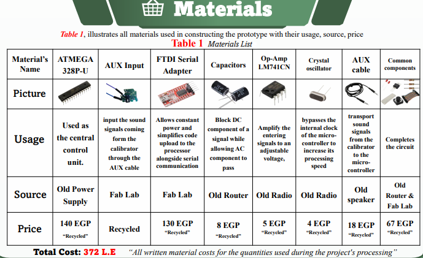
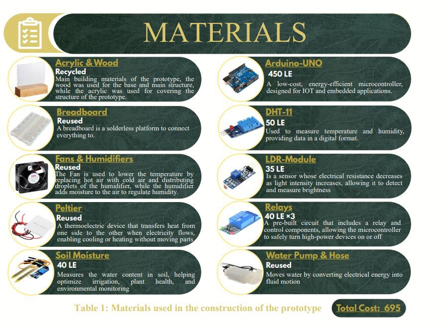
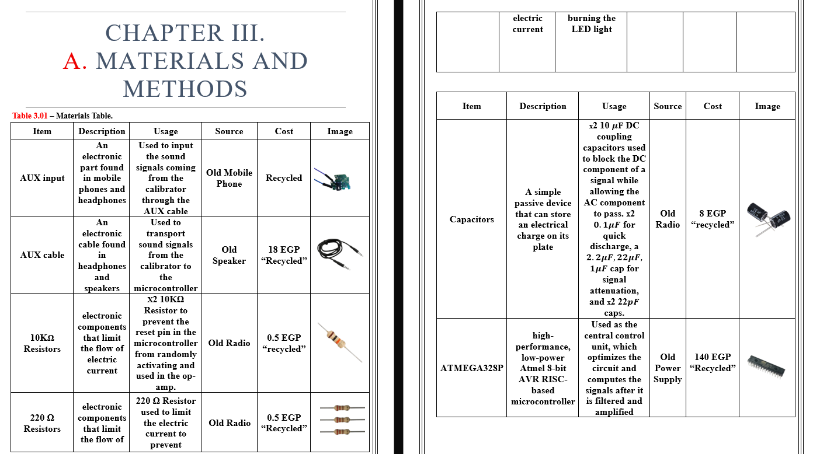
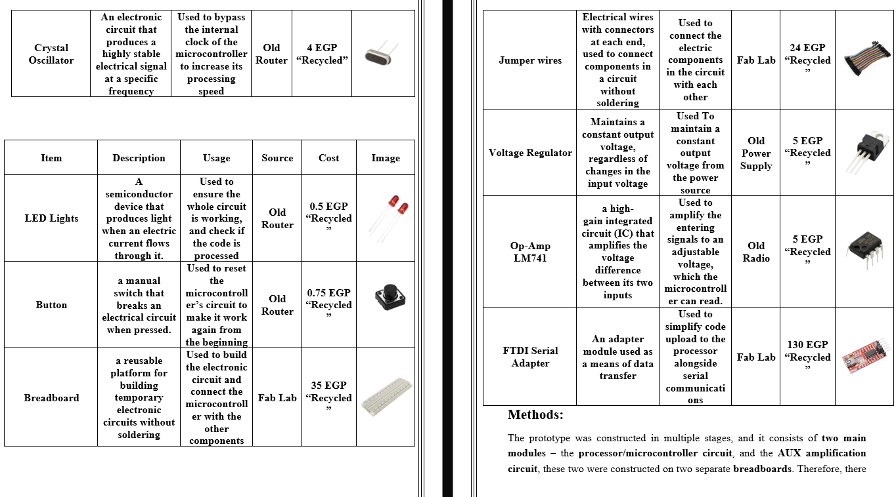
Methods
The Methods section explains the procedure used to construct, assemble, calibrate, prepare, test, etc. the prototype.
Since this is the portfolio, you must document each and every step used to construct a part of your prototype (for example, don’t just say “I made a beam”, say “A piece of 50*50 plywood was cut into 20*15 and sanded to have smooth edges”)
Organize the Methods into two or more steps/phases.
For each step or phase, explain:
What was done → How it was done → Why it was necessary
For figures, you either include the circuitry of the entire project or the final look. If you don’t have enough space for both, the circuitry schematic diagram has a higher priority.
It is also recommended to use figures to show the major steps and development of the prototype throughout the process. So, make sure to document your Capstone project throughout the semester by taking pictures as the prototype is being built and developed. (These figures are included in the presentation rather than the poster itself)
Note that:
Capstone Challenges often have specific requirements for the Methods section, and these requirements may change from one semester to another. Always check the design requirements for your specific challenge.
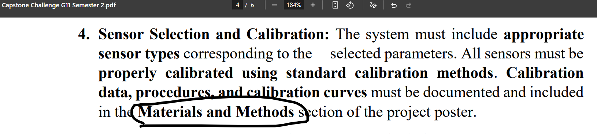
الMethods بتشرح الخطوات أو الإجراءات اللي اتعملت عشان يتمبناء وتجميع ومعايرة وتجهيز الـPrototype ، .وغيره حسب طبيعة المشروع
عشان احنا فالبورتفوليو, المفروض توضح و توثق كل خطوة انت عملتها عشان تعمل حاجة او تبني البروتوتايب بتاعك و تكتب الخطوات, يعني مثلا: متقلش انا عملت عمود/دعامة, قول انا جبت حتة خشب خمسين ف خمسين و بعد كده قطعناها عشرين ف خمستاشر و سنفرناها عشان تبقىsmooth
قسّم الـMethods الي خطوتين/مرحلتين او اكتير
:وفي كل خطوة أو مرحلة، اشرح بالترتيب إيه اللي اتعمل → اتعمل إزاي → ليه كان ضروري
باالنسبة للFigures اللي هقوله نصيحة و هو اختياري حاول دايمًا توفر مساحة في قسم الـMethods لعرض الشكل النهائي للـPrototype فيfigure
وكمان أنصح إنك تستخدمFigures لعرض تطور المشروع و اشكاله المختلفة أثناء عملية بنائه. عشان كده، مهم إنكتوثّق الـCapstone بتاعك طول الترم عن طريق تصوير الـPrototype .أثناء مراحل بنائه وتطوره
خلي بالك ان الـCapstone Challenges غالبًا بيكون ليها متطلبات محددة لازم تتذكر في قسم الـMethods ، والمتطلبات دي ممكن تختلف من ترم للتاني زي ما وضحت في الexample فوق
،عشان كدهاتأكد دايمًا من متطلبات الـChallenge بتاعتكم .قبل ما تكتب القسم
Full example of methods:
“Methods
Phase 1: Building the Greenhouse Structure:
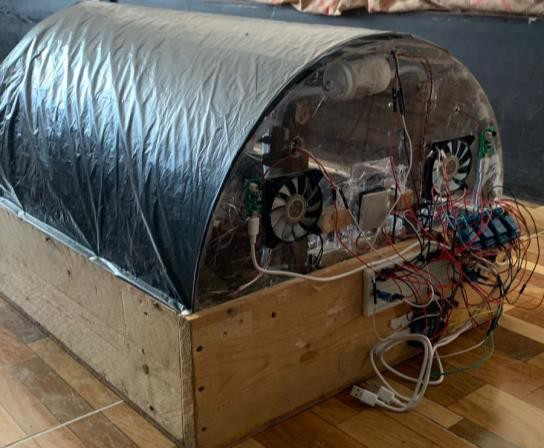
A compact greenhouse frame (≤ 0.25 m²) was constructed using lightweight, low-cost materials to ensure portability and ease of replication. Transparent plastic covering was used to allow maximum light penetration while maintaining internal environmental conditions. The full assembled prototype is shown in Figure 2.
Phase 2: Installing Water, Air, and Plant Support Systems:
A simple irrigation system was integrated using tubing and a small water pump to regulate soil moisture. Ventilation openings and airflow pathways were added to control humidity and temperature. Plant
Figure 2: Fully assembled prototype, and circuit.
holders were positioned to ensure uniform exposure to light and water distribution.
Phase 3: Electronics and Control System:
The system was built around a microcontroller to process sensor data and control actuators. Sensors for temperature, humidity, soil moisture, and light intensity were connected to continuously monitor environmental conditions. Based on sensor readings, the controller activates components such as fans, water pumps, and LED lighting, forming a closed-loop feedback system that maintains optimal conditions automatically.
Phase 4: Calibration of Sensors:
Each sensor was calibrated to ensure accurate readings. Known reference conditions were used to compare expected and measured values, and correction factors were applied where necessary. The calibration results and relationships between sensor output and real values are presented in Figure 3.
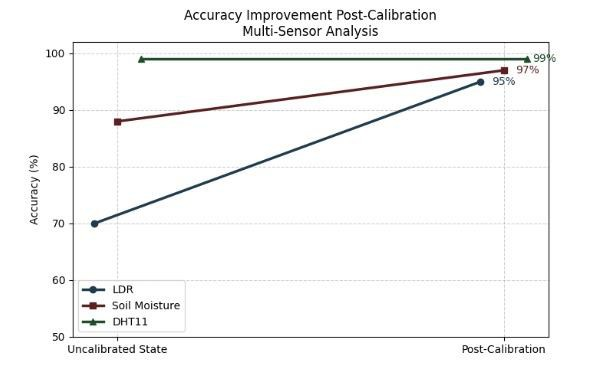
Figure 3: Graph showing the readings of the sensors before and after calibration.
Phase 5: Prepping the Actuators:
Actuators (fan, pump, and LED) were tested individually and then integrated into the system. Trigger thresholds were programmed so that each actuator responds appropriately to environmental changes, ensuring stable and autonomous operation for extended periods.”
The following is an EXTREMELY detailed methods section.
“Methods:
The prototype was constructed in multiple stages, and it consists of two main modules – the processor/microcontroller circuit, and the AUX amplification circuit, these two were constructed on two separate breadboards. Therefore, there were two main building stages, both of which required a set of different components.
One of the main methods we used for recycling is e-waste extraction, where old devices were brought and opened for motherboard extraction.
For the mobile phone, the back was opened and using very precise screwdrivers, the screws were removed. After that, the audio module of the phone was extracted. This contained the AUX input.
For the old radio, the chassis was removed by removing screws and the motherboard, the process of extraction here was simple and required a solder station to free the components. There were a bunch of capacitors and resistors that were extracted from this radio. There was also an op-amp, which was used for audio amplification in the radio.
For the old router, there were a bunch of LEDs grouped up, which were removed by a clipper. There was also a crystal oscillator which was easily removed by using an SMD heat gun (blows hot air). There was also a button that was extracted.
For the old power supply, there were a bunch of capacitors too, but they were mainly taken from the old radio, the most important part of this was the ATMega328P and the voltage regulator which were extracted using the heat gun.
For the old speaker, there was a male-male AUX cable attached to it which was taken.
First Building Stage
1. This stage was the building stage of the processor, and this stage required the ATMega328P primarily, there were a bunch of other components used which will be elaborated on. However, the ATMega328P has a limitation of a maximum supply of 5𝑉, this can be easily solvable using the voltage regulator. 2. One of the power rails was chosen as the output of the voltage regulator, this power rail had a 10𝜇𝐹 capacitor placed between its ground and live connections. 3. The live and ground connections were hooked to the Output (O/P) and GND in the voltage regulator. Specifically, the voltage regulator extracted from the radio, which was a model 7805 which supplies 5V, this is consistent with the existence of the ATMega328P in the radio. 4. Its input (I/P) and ground (GND) had a 10𝜇𝐹 capacitor placed between them; these two caps were used for signal noise cancellation. For any wanted input, it has to pass through the capacitor’s V+ and GND row. Debug circuitry was added, which was a simple LED connected to GND and its anode connected to a 𝟐𝟐𝟎𝛀 resistor to prevent its burning. 5. The two power rails of the breadboard were then hooked up together to give a consistent 𝟓𝑽 throughout the board. 6. The microcontroller was then added to about above the middle of the board at approximately row 11. 7. A resistor of 10𝑘Ω was hooked between the live rail and the reset pin of the ATMega328P (as shown in figure (3.02)). 8. The ground rail was hooked with the GND pins 8 and 22. 9. The live rail was hooked with the VCC and AREF pins (7 and 21). 10. The crystal oscillator was then added between pins 9 and 10, two 22 picofarad ceramic capacitors were connected between GND and the oscillators’ pins.
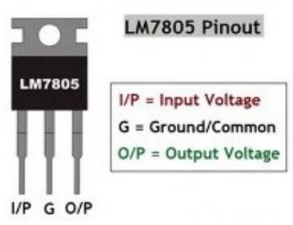
Figure 3.01 – LM7805 pin diagram
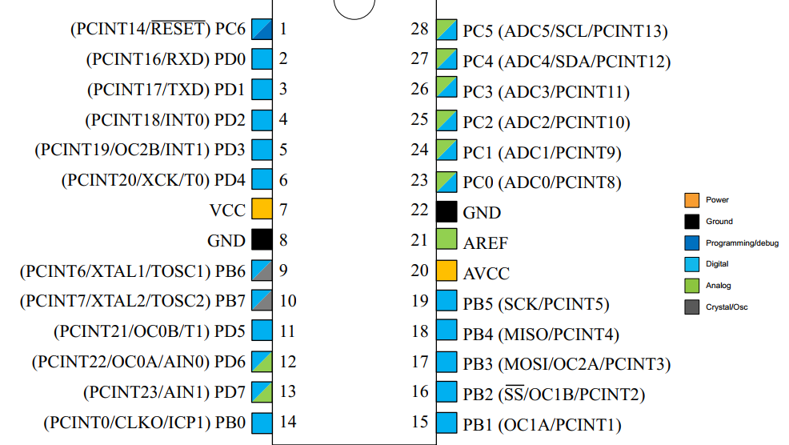
Figure 3.02 – ATMega328P DIP chip diagram.
11. The reset button was added above the microcontroller as a way to reset it, a GND connection was made to one of its pins and the other was an output pin (connection arrangement doesn’t matter in buttons.) connecting to the RESET pin, bypassing the 10k𝛀 resistor. 12. The FTDI serial adapter was placed at around the bottom of the breadboard, the DTR pin was connected to a 0.1𝜇𝐹 capacitor so that it can discharge signals quickly (tells the microcontroller that the device is ready to be received), its output was connected to the reset pin. The RX pin which stands for receive asynchronous data was connected to the TX pin of the microcontroller. The TX pin which stands for transmit asynchronous data was connected to the RX pin of the microcontroller. The VCC pin was then hooked onto the live power rail and the GND was connected to the ground connection.
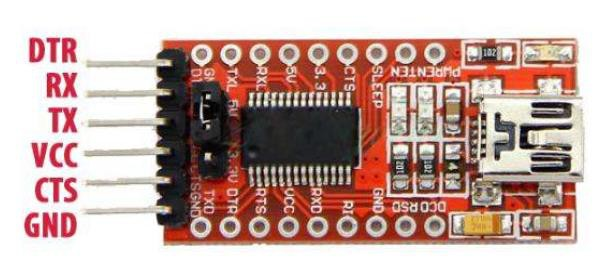
Figure 3.03 – a diagram showing the pins of an FTDI adapter.
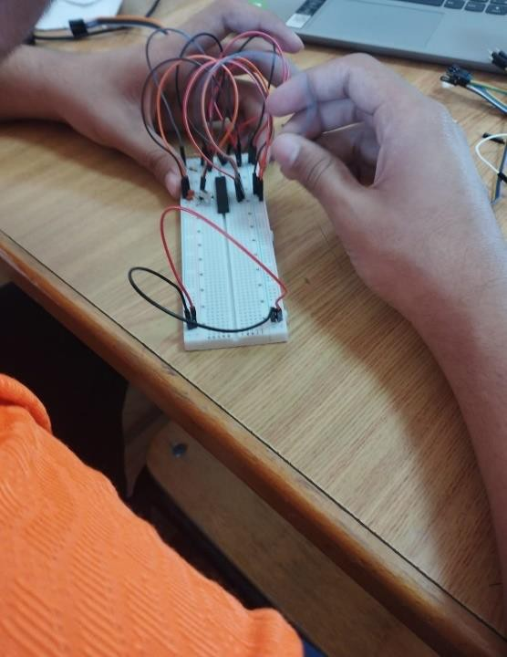
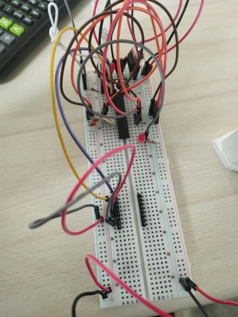
Figure 3.04 – the initial construction of the
prototype.
Figure 3.05 – a later stage of the construction after
the ATMega328P had been installed.
Second Building Stage
1. This stage was the building stage of the amplifier, it relied on the LM741 primarily, this is the op-amp that the circuit is going to use. 2. Figure (3.06) describes the pins of the IC; the OFFSET NULL and NC pins can be ignored. The most important parts of this are mainly the inverting input, non-inverting input, 𝑽−, 𝑽+, and the output. 3. The prototype was determined to be an AC-coupled, biased, non-inverting amplifier with a negative feedback configuration. Meaning that the positive input must pass through an AC-coupling stage before reaching the non-inverting input. The same AC-coupling must be done for ground before reaching the inverting input. 4. Another breadboard was attached to the main processing breadboard; this is so a clean slate may be prototyped on. 5. The AUX input whose GROUND and LEFT CHANNEL are soldered with a male-to- male jumper wire as shown in figure (3.07). 6. These jumpers are connected to the power rail of the second breadboard, where the ground is connected to the ground rail and the left channel is connected to the live rail. A capacitor of 𝟏𝝁𝑭 then pulls from the ground rail into a 10𝑘Ω resistor. 7. The resistor is then connected to the same pin as the inverting input. 8. A resistance of 100𝑘Ω is wired in parallel with the inverting input. This is for the
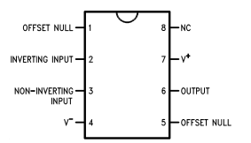
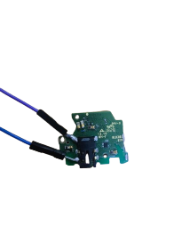
negative feedback. This gives a gain of 𝐺= 1 +
𝑅𝑓𝑅𝑖 where 𝑅𝑓 is the 100𝑘Ω resistance
and 𝑅𝑖 is the 10𝑘Ω resistance. 9. The live rail of the processing board is connected to an arbitrary, empty row in the amplification board. Call this the live row. 10. The ground rail of the processing board is connected to an arbitrary, empty row in the amplification board. Call this the ground row. 11. A capacitor of 2.2𝜇𝐹 is wired from the live rail of the amplification board to the input of a voltage divider row. 12. Two resistors of 10𝑘Ω are wired in parallel, one of them connecting to the ground row and the other connecting to the live row, all summing up into the biased row
Figure 3.06 – a diagram showing the pins of an LM741 op-
amp
Figure 3.07 – an AUX
input chip.
(as in, the input signal is now biased after it was input from the capacitor and biased by the voltage dividers). 13. The biased row is then connected to the non- inverting input. 14. For 𝑉− and 𝑉+, two batteries are required for dual- supply voltage. These two batteries are 9V and through grounding (connecting them to the ground row), can turn into +9V and -9V. These can then be wired to their respective pins. 15. The output is taken, and an arbitrary, empty row is chosen for filtering by using a high-pass filter. This HPF has a capacitor of 22𝜇𝐹 and a resistor of 300Ω, filtering an approximate 21𝐻𝑧. 16. The output from the HPF is then taken by a jumper to the A0 pin in the microcontroller, otherwise known as pin 23.
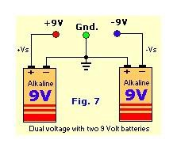
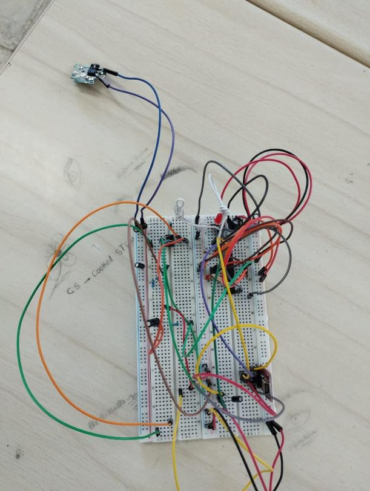
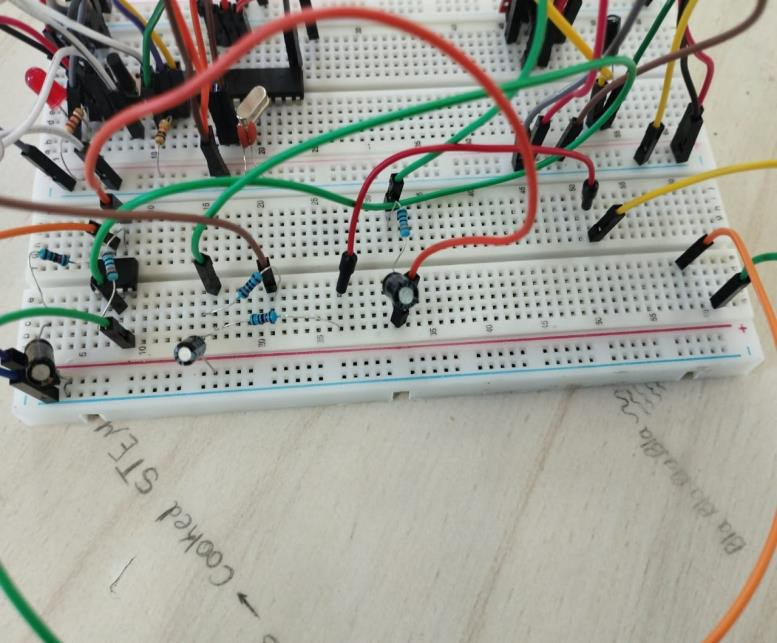
Any variable thereafter is calculated using the processor, this can be then related to the “arduinoFFT” library used in the code. However, there are a few things to be noticed when dealing with this library and configuration, of which are:
Figure 3.08 – a dual-supply voltage created by
two 9V batteries.
Figure 3.09 – an image of the fully constructed prototype.
Figure 3.10 – ditto, from another angle.
1. The offset frequency the program gives when nothing is connected at all – this is technically a systematic error, and this error is consistent throughout readings, therefore, this must be subtracted from the output frequency through the application. 2. The biasing voltage is 𝟐. 𝟓𝑽, meaning that when performing an 𝑎𝑛𝑎𝑙𝑜𝑔𝑅𝑒𝑎𝑑() function and converting it to a voltage value, meaning that 2.5 must be subtracted from the reading. 3. The program uses a windowing function, and its parameters are the usage of a hamming window; this is used to decrease noise and increase accuracy. 4. Any complex wave that outputs because of a complex Fast Fourier Transformation must be converted to its magnitude using the 𝑐𝑜𝑚𝑝𝑙𝑒𝑥𝑇𝑜𝑀𝑎𝑔𝑛𝑖𝑡𝑢𝑑𝑒(… ) function. (See the arduinoFFT GitHub for more precise information or function input parameters.) 5. Two functions may be utilized, either a function you write by your own to achieve a dominant frequency or the built-in 𝑚𝑎𝑗𝑜𝑟𝑃𝑒𝑎𝑘() function, which returns (gives) the dominant frequency. (Don’t forget to subtract the offset frequency (systematic error))
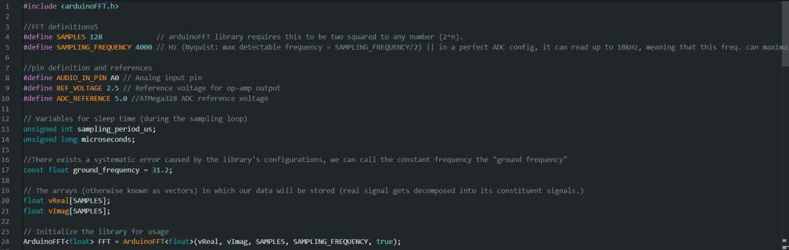
Figure 3.11 – first part of the code (variables and definitions)
Figure (3.11) is the set of all variables required for initialization.
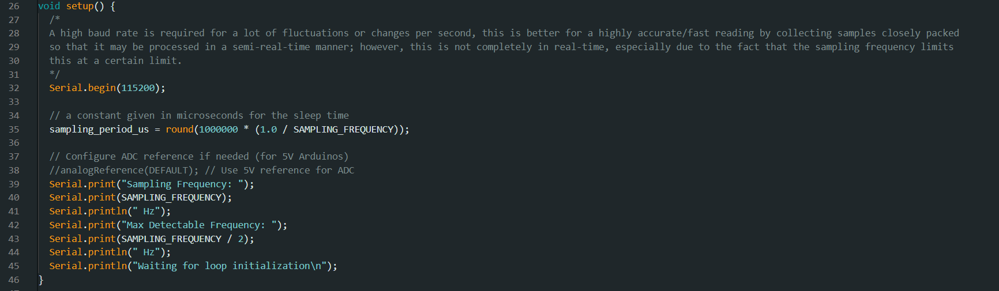
Figure 3.12 – second part of the code (setup and initialization).
Figure (3.12) is the initialization of everything before the readings start occurring.
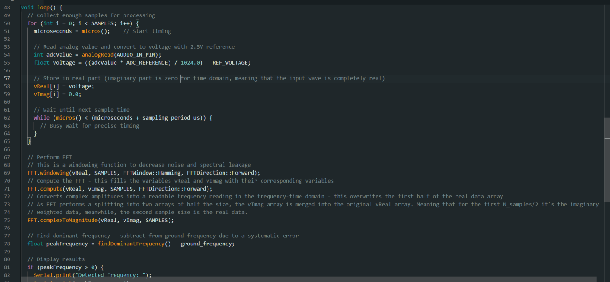
Figure 3.13 – half of the repeated code snippet, the function that recalculates frequency periodically.
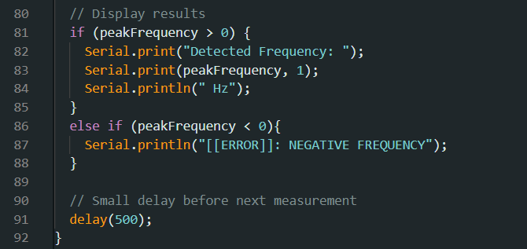
Figure 3.14 – the other half of the loop.
Figure (3.13) & Figure (3.14) represent the loop function, where every reading occurs.
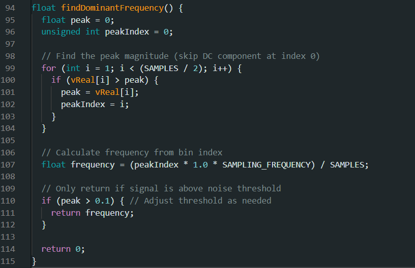
Figure 3.15 – a function used to calculate the most dominant frequency out of all the complex waves given.
Figure (3.15) represents the findDominantFrequency function required for identifying the frequency.”
Test Plan
This is one of the most important sections in your portfolio. Most grading teachers will focus on this part along with your analysis to make sure you followed the procedures as you mentioned. That’s why it is important to be as concise as possible when writing the test plan and you have to focus on the details of each step.
ده من أهم الأجزاء في الـportfolio بتاعك. أغلب المدرسين اللي بيصححوا بيركزوا على الجزء ده مع الـanalysis ، عشان يتأكدوا إنك مشيت على الخطوات زي ما قلت. عشان كده مهم تكون دقيق ومختصر جداً وانت بتكتب الـtest plan ، وتركز على تفاصيل كل خطوة.
The test plan must only include quantifiable data or measurements that you plan on taking.
الـtest plan لازم يكون فيه بس داتا أو قياسات بالأرقام(quantifiable) .ناوي تاخدها
Any subjective criteria you want to test must be evaluated using a scientific method based on the results of an anonymous survey. For example requirements like user friendliness and easy operation can be evaluated by having anonymous users try the project or its interface and fill a survey afterwards detailing their experience.
أي معيار ذاتي(subjective) عايز تختبره لازم يتقيّم بطريقة علمية مبنية على نتايجanonymous survey ً. مثلاrequirements زيuser friendliness وeasy operation ممكن تتقيّم إنك تخلي مستخدمين مجهولين يجربوا المشروع أو الـinterface بتاعه، وبعدين يملواsurvey يوصفوا فيه .تجربتهم
Each step must be mentioned in detail and contain the following:
:كل خطوة لازم تتذكر بالتفصيل ويكون فيها الآتي
Process and setup (including safety procedures) [mandatory]
الـ عملية نفسهاوالـ حاجات اللي انت جايبها عشان تعمل الtest plan (وده يشمل إجراءات الأمان)
.][إجباري
Step importance and role [mandatory]
.]أهمية الخطوة ودورها [إجباري
Possible variations [optional]
الـ اختلافات.]المحتملة [اختياري
Pass criteria / which design requirement to satisfy
الـPass criteria ، يعني الخطوة دي بتحقق أنهيdesign requirement.
You must mention how your team plans on calculating the error and accuracy of the prototype and how you plan on dealing with it if you deem it necessary.
لازم تذكر التيم ناوي يحسب الـerror والـaccuracy بتوع الـprototype إزاي، وهيتعامل معاهم .إزاي لو شاف إن ده ضروري
There must be NO mention of the real results in the test plan section.*
ماينفعش تذكر النتايج الحقيقية خالص في جزء الـtest plan.
For example, a fulfilling test plan would be as such: مثال
“Since a lot of requirements are of quantifiable data, it is essential for the prototype to be tested along a concise plan to figure out whether it is successful or it needs new modifications to push it towards that efficiency needed.
To make sure the design is reliable for humidity measurement, a fixed and predetermined range of humidities is created as the reference and base of the needed calculations. The procedure is as follows:
- Safety coats, gloves and goggles are needed as interaction with abrasive and potentially dangerous chemicals is in effect.
- Preparation of each solution with specific molar concentrations. A solution of 2M NaCl which yields X RH {percent humidity, the measuring unit of humidity}, a solution of 0.5M MgCl which yields a Y RH, and finally a solution of 1M LiCl which yields a Z RH are all prepared in advance; this is because RH values need time to saturate their normal yield.
- Solutions will be kept at room temperature as that is the respective temperature to the predetermined RH values. This makes sure no fluctuations occur.
- To avoid any humidity leakage when utilizing the device, it must be inserted and kept for a time of X hours to make sure the humidity re-saturates.
- At the end of the time period, the readings from the last Y minutes are averaged together. This new value will be used in calculating the accuracy and error percentage through the equation; measure average/true value * 100%= error%.
- If the error% across all 3 trials is less than or equal to 5%, it passes the predetermined requirement of accuracy, deeming the device successful and accurate. However, if the error is higher than anticipated, a few modifications to the potentiometer and sensitivity of the sensors must be made with new documented testing until the preferred result is achieved.
- After proper testing is completed, solutions are disposed of safely by………”
The test plan itself is conducted with tools, these tools must be verified school equipment, said equipment must be shown in any pictures taken during construction to verify that capstone construction was done on school grounds. This a really simple section, but you’ll also need to attach the methodology you’re going to use your tools for. For example, if you’re going to use a “function generator,” you’re going to want to explain how you’re going to use it in actual application. The “function generator” for example: “is going to be turned on and calibrated to 1250Hz so that the prototype can get hooked up to it to get tested.” The mechanism of the function generator can be written about in the “Research” section. If you’re using tools like a handsaw or a screwdriver or whatever else for testing, then list EVERYTHING used for the test plan in terms of tools here.
الـtest plan نفسه بيتعمل بأدوات، والأدوات دي لازم تكون أجهزة مدرسة معتمدة، ولازم تبان في أي صور بتتصور أثناء التصنيع عشان تثبت إن الـcapstone اتعمل جوه المدرسة. ده جزء بسيط جداً، بس هتحتاج كمان تكتب الطريقة اللي هتستخدم بيها الأدوات دي. مثلاً لو هتستخدم"function generator" * لازم تشرح *إزاي، هتستخدمه في التطبيق الفعلي. الـ"function generator" ًمثلا:is going to be turned on and calibrated"
to 1250Hz so that the prototype can get hooked up to it to get tested." أما طريقة شغل الـ function generator نفسه فممكن تكتبها في جزء الـ"Research" . ولو بتستخدم أدوات زي منشار يدوي أو مفك أو أي حاجة تانية فيالتجارب بتاعتك ، اكتبكل الأدوات المستخدمة في الـtest plan .هنا
Data Collection
Data collection relies on the test plan and any simulations, tests, or models you’ve ran. This also includes any measurements you’ve taken. This section should be (preferably so) filled out as you write your entire portfolio. Data from research papers should be implemented here and your research section so you can have a reference and a storage for when you want to go back for any data you’ve collected throughout the entire semester regarding the prototype.
الـData collection بيعتمد على الـtest plan وأيsimulations أوtests أوmodels عملتها، وكمان أي قياسات أخدتها. والأفضل إن الجزء ده يتملى أول بأول وانت بتكتب الـportfolio كله. والداتا اللي من الـresearch papers تتحط هنا وفي جزء الـresearch ، عشان يبقى عندك مرجع ومخزن ترجعله لأي داتا جمعتها طول الترم عن الـprototype.
An example of data collection is to record length values for something and getting their average value later:
مثال على الـdata collection: إنك تسجّل قيم أطوال لحاجة معينة وبعدين تطلع متوسطها:
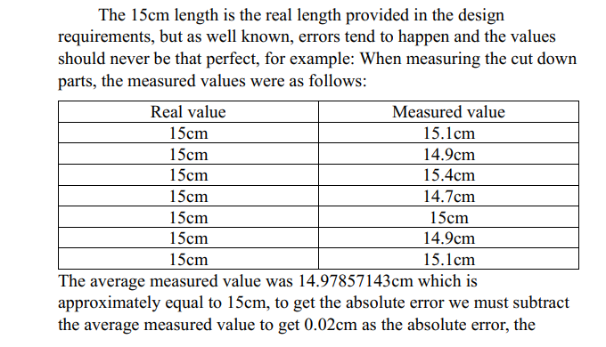
NOTE: The average measured value should be written according to significant figure rules and should also be rounded off if needed, unlike the previous example, the number should be rounded up by decimals first.
:ملحوظة متوسط القيمة المقاسة لازم يتكتب حسب قواعد الـsignificant figures ، ويتقرّب لو محتاج. وعلى عكس المثال اللي فات ، الرقم لازم يتقرّب بالكسور العشرية الأول.
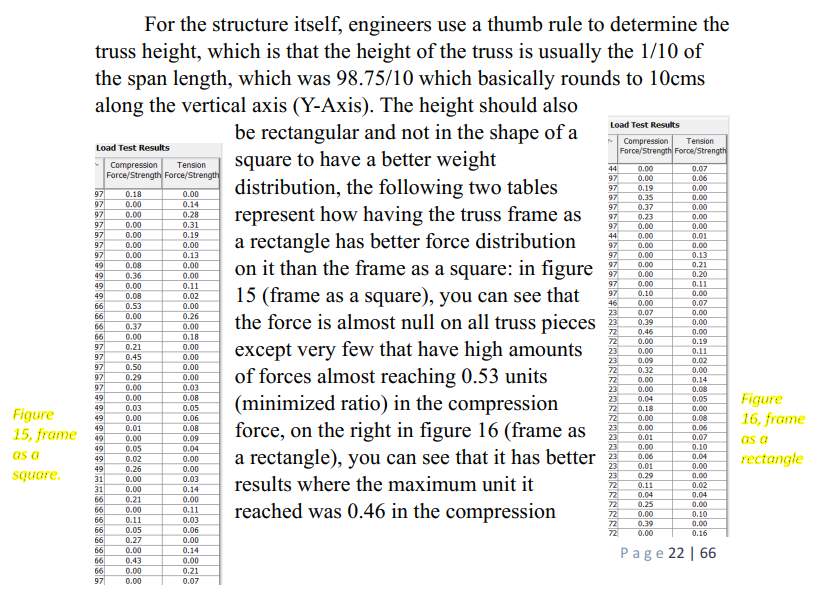
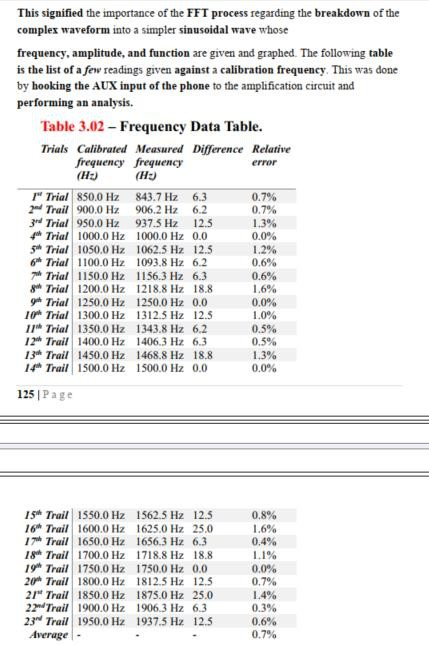
An example ^ (This was written in the research section, which is incorrect, the tables on the left and right should’ve been written and described in the data collection section and referenced by hyperlink in the research section.)
^ مثال (المثال ده اتكتب في جزء الـresearch ، وده غلط؛ الجداول اللي على الشمال واليمين كان المفروض تتكتب وتتوصف في جزء الـdata collection ، ويتعملهاreference بـhyperlink في جزء الـ)research.
You’re also going to write the results of your test plan in this section, which should look like the following:
وهتكتب كمان نتايج الـtest plan في الجزء ده، والمفروض تبقى شبه اللي عاليمين :
This is also the place where you write your results, similarly to how you write them in the poster, you’ll write them here. You’re going to note down your positive and negative results as well as what they may imply for other people attempting to recreate this, you’re also going to write redundancies or discrepancies in your results (honesty is better than lying and failing to do so.)
وده كمان المكان اللي بتكتب فيه النتايج، بنفس الطريقة اللي بتكتبها بيها في الـposter . هتسجل النتايج الإيجابية والسلبية، وإيه معناها للي هيحاول يعيد عمل المشروع ده، وكمان هتكتب أي تكرار أو تناقض(discrepancies)
.)في نتايجك (الصراحة أحسن من إنك تكذب وتقع
The Results section presents the outcomes obtained from testing the prototype. It should show whether the prototype actually met its Design Requirements and what problems were discovered during testing.
جزء الـResults بيعرض النتايج اللي طلعت من اختبار الـprototype ، ولازم يوضح هل الـprototype حقق الـ Design Requirements .فعلاً ولا لأ، وإيه المشاكل اللي ظهرت أثناء الاختبار
The Results should include both positive and negative results, preferably in separate sections. It is also recommended to mention the changes or modifications made to address the negative results.
الـResults لازم يكون فيها النتايج الإيجابية والسلبية، ويُفضّل كل واحدة في جزء لوحدها. ومنصوح كمان إنك تذكر التغييرات أو التعديلات اللي عملتها عشان تعالج النتايج السلبية (ده لو انت حلتها).
For each major result, whether positive or negative, explain:
:لكل نتيجة مهمة، سواء إيجابية أو سلبية، اشرح
What was observed → What the result showed → Why the result matters
For example, instead of simply saying: مثال
“The pump worked.”
Give the actual result and what it demonstrated: الصح
“The pump increased soil moisture from 58% to 81% in 47 seconds, demonstrating that the irrigation actuator could respond effectively when the soil moisture fell below the required range.”
Figures: الأشكال
It is important to support your numbers and test results with Tables and Graphs whenever appropriate. These should clearly present the data obtained during testing.
مهم تدعم أرقامك ونتايج الاختبار بـTables وGraphs كل ما يكون ده مناسب، ويكونوا عارضين الداتا اللي طلعت .من الاختبار بشكل واضح
Note: ملحوظة
The Results section should focus on actual observations and measurements, rather than detailed explanations of why the results happened.
جزء الـResults .لازم يركّز على الملاحظات والقياسات الفعلية، مش على شرح مفصّل لليه النتايج طلعت كده
Detailed interpretation and explanations of the results belong primarily in the Analysis section.
التفسير والشرح المفصّل للنتايج مكانه الأساسي جزء الـAnalysis.
More examples: أمثلة تانية
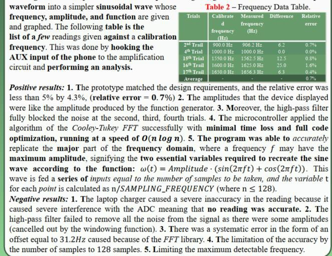
Analysis and Discussion
The analysis and discussion section is practically the core of your capstone project for both the portfolio and poster. Its only legitimate challenge is its limited space (in the poster) and intense need for conciseness and focus. A lot of people, including evaluators and teachers, may not be the best informed and knowledgeable about the project and its scientific basis, no matter how simple it is. That’s why we follow the principle of “explain it to me like I’m five years old” fulfilling this principle deems your analysis to be thorough and understandable without the need for a scientific background of any kind.
جزء الـanalysis and discussion هو عملياً قلب الـcapstone project ، في الـportfolio والـposter الاتنين. والتحدي الحقيقي الوحيد فيه هو المساحة المحدودة (في الـ)poster .والاحتياج الشديد للاختصار والتركيز ناس كتير، منهم المقيّمين والمدرسين، ممكن مايكونوش ملمّين بالمشروع وأساسه العلمي مهما كان بسيط. عشان كده بنمشي على مبدأ"explain it to me like I’m five years old" (اشرحهالي كأني طفل عنده5 سنين)، ولما تحقق المبدأ ده يبقى الـanalysis .بتاعك شامل ومفهوم من غير ما القارئ يحتاج أي خلفية علمية
First lets start off with what you should go over in this section before we get to how and all the specifics:
:خلينا نبدأ الأول باللي المفروض تتكلم عنه في الجزء ده، قبل ما ندخل في الـ "إزاي" والتفاصيل
Introductory phase. In here you start by mentioning the grand challenges and problem to be solved that urged you to work on your project.
الـIntroductory phase (مرحلة التمهيد): هنا بتبدأ بذكر الـgrand challenges والـ problem to be solved .اللي خلوك تشتغل على المشروع
Ground preparation phase. In here you follow up with the project you have chosen and how it is believed to have a positive impact on the aforementioned issues you want to overcome.
الـGround preparation phase (مرحلة تجهيز الأرضية): هنا بتكمّل بالمشروع اللي اخترته، .وإزاي متوقع إن يكون ليه تأثير إيجابي على المشاكل اللي ذكرتها وعايز تتغلب عليها
The introductory phase as well as the ground preparation phase could technically go as “summarizations” for both chapter 1 and 2 respectively.
الـintroductory phase والـground preparation phase ممكن يعتبروا عملياً "ملخصات" لـ chapter 1 وchapter 2 .بالترتيب
The Discussion phase. In here you discuss how the projects parts exist in unison and harmony, where you mention their role, effect, and how they function. This is mentioned in a manner to simply explain how this entire combination reaches the results.
الـDiscussion phase (مرحلة المناقشة): هنا بتتكلم إزاي أجزاء المشروع شغالة مع بعض في تناغم، وبتذكر دور كل جزء وتأثيره وبيشتغل إزاي؛ والهدف إنك تشرح ببساطة إزاي التركيبة دي كلها .بتوصل للنتايج
The analytic phase. In here you go over the results and other key information like equations and parameter relations, explain what they mean as results and what specific deviations or results could mean or affect the performance of your project.
الـAnalytic phase (مرحلة التحليل): هنا بتمر على النتايج وأي معلومات مهمة تانية زي الـ equations والعلاقات بين الـparameters ، وتشرح معناها كنتايج، وإيه معنى أي انحرافات أو .نتايج معينة وإزاي ممكن تأثر على أداء المشروع
Ending/conclusion phase. In here you analyze what this project may mean for the future or the goals it will hopefully fulfill (completely optional).
الـEnding/conclusion phase (مرحلة الخاتمة): هنا بتحلل المشروع ده ممكن يعني إيه .)ًللمستقبل، أو الأهداف اللي بنتمنى يحققها (اختياري تماما
The introductory phase:
There’s this tip which is “You start off your analysis by reconsidering the grand challenges”
فيه نصيحة منتشرة بتقولYou start off your analysis by reconsidering the grand"
challenges" (يعني ابدأ الـanalysis بإنك ترجع للـgrand challenges .)تاني
We think this is really, really wrong considering that throughout your entire portfolio, you have an ENTIRE chapter dedicated to defining the grand challenges, connecting them and researching them. It is important to analyze them here once more so we don’t argue that the grand challenges here can’t be considered; however, that should be done so in a more natural fluid manner, and introductory sense to refrain from splitting them into two different parts which makes this a whole lot longer (introduction then grand challenges).
واحنا شايفين إن ده غلط جداً جداً، لأنك طول الـportfolio عندكchapter كامل مخصص لتعريف الـgrand challenges وربطهم والـresearch عنهم. مهم إنك تحللهم هنا تاني، فاحنا مش بنقول إن الـgrand challenges ماينفعش تتذكر هنا؛ لكن لازم ده يحصل بشكل طبيعي وسلس وبروح المقدمة، من غير ما تقسمهم لجزئين منفصلين (مقدمة وبعدين)grand challenges ، لأن ده بيطوّل .ًالجزء جدا
One of the best ways to hook a reader’s attention (which is very important in this section to make sure a reader extracts the right amount of information well enough) is to start off with a side plot or statistic—a new insight is much advised. In the case of the analysis it is possible to start off with the problem to be solved or statement that we identified earlier, utilize an important mind-blowing statistic or piece of information. You connect it to the grand challenges in a backwards type of approach which helps inflate its importance so instead of
من أحسن الطرق إنك تشد انتباه القارئ (وده مهم جداً في الجزء ده عشان تضمن إنه ياخد كمية المعلومات الصح بشكل كويس) إنك تبدأ بقصة جانبية أو إحصائية، ويُفضّل جداً تكونinsight .جديدة في الـanalysis ممكن تبدأ بالـproblem to be solved أو الـstatement ،اللي حددناه قبل كده وتستخدم إحصائية أو معلومة مهمةmind-blowing (تخض). وتربطها بالـgrand challenges :بطريقة عكسية، ودي بتكبّر أهميتها. يعني بدل
“problems A B and C are all connected by problem D because of X stats proving it is really bad and requires solving”
you might find it more fluid or attention grabbing to go الأحسن تكتبها كده
“Whilst analyzing problem D we found that the statistic X was a clear product which also sprouted, realizing new branching effects on many challenges Egypt faces, some of which are problems A, B and C. It is believed that solving or putting efforts to suppress Problem D could have positive effects on many of the aforementioned challenges.”
An example for the mind-blowing statistic or insight is to analyze the problem’s cause to something more scientific or quantifiable in a way whilst also connecting it to something people can understand and see for themselves—going “increased death rates due to CO2 emissions” is more interesting than just “increased CO2 emissions” because people understand how bad death is, but not necessarily CO2 emissions (of course you can try and explain it further but it just spirals into more complexities). One time we did this by stating how heavy metals contaminate water and provided the Osmotic Pressure equation, explaining how it affects the local environment (people know how hard it is to find drinkable and clean water to an extent) and using that equation proving that statement. As you can see in the following example:
مثال على الإحصائية أو الـinsight الـmind-blowing : إنك تحلل سبب المشكلة لحاجة علمية أو قابلة للقياس، وفي نفس الوقت تربطها بحاجة الناس تقدر تفهمها وتشوفها بنفسها. إنك تقولincreased death rates due to"
CO₂ emissions" أكتر إثارة للاهتمام من"increased CO₂ emissions" بس، لأن الناس فاهمة قد إيه الموت وحش، لكن مش بالضرورة فاهمة الـCO₂ emissions (طبعاً ممكن تحاول تشرحها أكتر بس ده هيدخلك في تعقيدات أكتر). ومرة عملنا كده لما قلنا إن الـheavy metals بتلوّث المياه، وحطينا معادلة الـOsmotic Pressure ، وشرحنا إزاي ده بيأثر على البيئة المحلية (الناس عارفة لحد ما قد إيه صعب تلاقي مياه نضيفة تتشرب)، :واستخدمنا المعادلة دي عشان نثبت الكلام ده. زي ما هتشوف في المثال اللي جاي
“Electronic waste, which typically releases heavy metals into the environment through soil and water was found to make up over 70% of water toxicity and pollution.
This affects public health, especially in water since only 20% to 22.3% can be recycled effectively. Moreover, by increasing the amount of the leached electronic waste in the water, the molarity (concentration) of the heavy metals increases—making the water inedible and environmentally toxic—which increases the osmotic pressure because it is directly proportional to the molarity, where the formula of the osmotic pressure is 𝚷= 𝒊𝑴𝑹𝑻, where 𝒊 is the van't Hoff factor, 𝑴 is the molarity, 𝑹 is the ideal gas constant, and 𝑇 is the temperature in Kelvin. This makes the process of reverse osmosis to filter the water harder and consumes more energy in the filtration process, [according to (CH.2.02)].
This makes it much harder to improve the technological environment, reduce and adapt to climate change and pollution, and have recyclable waste as an option for material extraction. This is why E-waste is believed to be a major issue that must be attacked at the core of disposal by creating a project that prevents this line of events from taking place.“
Here we were able to grab the attention using an important piece of statistical information to explain the scientific reasoning behind it as well as explaining what it means for the average human who doesn’t know what heavy metals are or why they are bad and we finished off by connecting this statement to the grand challenges we believe are important for Egypt to confront.
هنا قدرنا نشد الانتباه بمعلومة إحصائية مهمة، وشرحنا الأساس العلمي وراها، وكمان شرحنا معناها للإنسان العادي اللي مايعرفش يعني إيهheavy metals أو ليه هي مضرة، وختمنا بإننا ربطنا الكلام ده بالـgrand challenges .اللي شايفين إنها مهمة إن مصر تواجهها
This is a great opening since you quantify the problem’s weight to the reader, they see that there’s actually a need to stop this (if they want to keep drinking clean water).
دي بداية ممتازة لأنك بتبيّن للقارئ حجم المشكلة بالأرقام، فيشوف إن فيه احتياج حقيقي لوقفها (لو عايز يفضل يشرب .)مياه نضيفة
You then immediately introduce your solution—the ground preparation phase—by stating how it tackles that specific problem. This phase is pretty straightforward and petite.
بعدها على طول بتقدّم الحل بتاعك، وده الـground preparation phase ، بإنك توضح إزاي بيعالج المشكلة دي .بالذات. والمرحلة دي بسيطة وقصيرة
This is called the discussion phase, meaning that you do need to “Discuss” things, and here you’re going to want to discuss what actually made your project work and stand as it is while you’re writing this. This isn’t just throwing around equations and your “scientific base” to come to a conclusion that your projects works at the end (hooray I guess but no)
دي اسمها الـdiscussion phase ، يعني لازم فعلاً "تناقش" حاجات؛ وهنا هتناقش إيه اللي خلّى مشروعك يشتغل ويبقى بالشكل اللي هو عليه وانت بتكتب. الموضوع مش إنك ترميequations والـ"scientific base" بتاعك .)وخلاص عشان توصل في الآخر إن المشروع شغال (هيييه... بس لأ، مش كده
You must discuss what each part is, its role, how it contributes and why it is the way it is. Also don’t frame this as “we did this and this happened so this is a success” this is basically how an uneducated person reaches a solution.
لازم تناقش كل جزء هو إيه، ودوره، وبيساهم إزاي، وليه هو بالشكل ده. وكمان ماتقدّمش الكلام بشكلwe did"
this and this happened so this is a success" ، ده أسلوب واحد مش دارس بيحاول يبرر بيها لحل.
The EDP and scientific method are actually the exact opposite; “we found this phenomenon happens when in these conditions, since this was our goal we decided to replicate this by….. and at the end we reached the needed result” it is also beneficial to mention prior options you deduced to not be the most optimal, a good example goes as follows:
الـEDP والـscientific method عكس كده بالظبط:we found this phenomenon happens when" in these conditions, since this was our goal we decided to replicate this by..... and at the end we reached the needed result" . ومفيد كمان تذكر الاختيارات اللي كانت قدامك قبل كده واستنتجت :إنها مش الأمثل. ودي مثال كويس
“With large computational data and quick changing parameters being in effect, it was deduced that it is mandatory to include a IC with a high enough frequency and computational power to satisfy the systems needs. While both Arduino and ESP32 are microchips that run calculations and automate responses effectively, Arduino would require an external internet or network based IC connection to transmit data to server. Not only is this less energy efficient, but also it demands and uses up some of the computational power and speed of the Arduino, deeming the ESP32 the optimal choice.”
This only needs the number specifics of their respective power and computation speeds as well as what the system you plan on building demands. Say you plan on building an adaptive system that stays in equilibrium even though changes occur every 3 seconds. The Arduino may issue orders every 4 seconds and by then the state of the system has already changed (you are in the present fixing the irrelevant past) whilst the ESP32 could issue the same commands with higher efficiency in just 2 seconds. This is the type of discussion you want, you want to explain and analyze your choices and what they mean in relation to the intended result.
ده محتاج بس الأرقام الخاصة بقدرة كل واحد وسرعة الحساب، وإيه اللي الـsystem .اللي ناوي تبنيه محتاجه افترض إنك ناوي تبنيadaptive system لازم يفضل متوازن رغم إن فيه تغييرات بتحصل كل3 ثواني؛ الـ Arduino ممكن يدّي أوامر كل4 ثواني، ووقتها حالة الـsystem تكون اتغيرت خلاص (يعني انت في الحاضر بتصلّح ماضي مابقاش له لازمة)، بينما الـESP32 يقدر يدّي نفس الأوامر بكفاءة أعلى في ثانيتين بس. ده نوع .المناقشة اللي انت عايزه: تشرح وتحلل اختياراتك ومعناها بالنسبة للنتيجة المطلوبة
A more concise example is as follows: مثال أوجز
“In the circuit, the prototype’s microcontroller or ESP32 can provide 72Mbps of WiFi transmission speed, sufficient for local server communication at reliable speeds; however, rendering it ineffective in heavy-duty tasks such as AI-server and asynchronous communication. Therefore, it’d be too hard to manage an AI communication. It has an internal clock speed of 240MHz, far greater than its Arduino counterpart; allowing it to process much heavier tasks; however, none of these microcontrollers is suited for heavy-duty computation per reading (readings are at a frequency of 0.5𝐻𝑧 or 2 sec); hence, the best suited option is to upload the function data to the central server.”
This accurately explains why the ESP32 was chosen and why the implementation and usage of a central server was necessary.
ده بيشرح بدقة ليه اختاروا الـESP32 ، وليه كان ضروري نستخدم central server.
Another example of discussion is the prototype’s computation process, saying that it outputs certain variables or responses to a change in the environment. As seen in the following example
مثال تاني على الـdiscussion : عملية الحساب اللي بيعملها الـprototype ، يعني إنه بيطلّعvariables معينة أو :بيستجيب لتغيّر في البيئة، زي ما في المثال اللي جاي
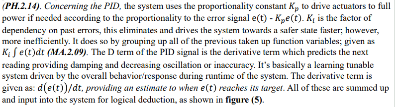
This discussion was able to explain what happens software-wise. Where using the inputs from sensors and running them through a PID system loop (a system that focuses on correcting deviations without a mathematical model predicting exact values) I don’t want to bore you with the details of a PID’s function but basically in this part it was explained how each variable helps the system know how much time is needed to keep the actuators on (another word for things you control like motors but with more functions like a humidifier or a Peltier that cools down the system). This is basically the logic of the system which you must discuss and explain. In here it was mentioned that this system basically learns and tunes its future responses referencing its past adaptations. What does this achieve you may ask? Not only are you obviously explaining how your system functions, this also helped show the fact that the system’s efficiency tunes up and increases the more experienced it is (this explained the decrease in response time in our system because it kept getting better and faster which was showcased in the results)
المناقشة دي قدرت تشرح إيه اللي بيحصل من ناحية الـsoftware : إزاي بناخد الـinputs من الـsensors ونعدّيها علىPID system loop (دهsystem بيركّز على تصحيح الانحرافات من غيرmathematical model بيتوقع القيم بالظبط). مش هزهقك بتفاصيل شغل الـPID ، بس باختصار الجزء ده شرح إزاي كلvariable بيساعد الـ system يعرف محتاج يشغّل الـactuators قد إيه (الـactuators دي الحاجات اللي بتتحكم فيها زي الـmotors ، بس بوظايف أكتر، زيhumidifier أوPeltier بيبرّد الـ)system . ده عملياً الـlogic بتاع الـsystem ، ولازم تناقشه وتشرحه. واتذكر هنا كمان إن الـsystem .ده بيتعلم وبيظبط استجاباته الجاية بناءً على تكيّفاته اللي فاتت طب ده بيحقق إيه؟ غير إنك بتشرح الـsystem شغال إزاي، ده كمان وضّح إن كفاءة الـsystem بتتحسن وتزيد كل ما خبرته تزيد (وده فسّر قلة الـresponse time عندنا، لأنه فضل يتحسن ويبقى أسرع، وده ظهر في الـ results).
By “Analysis phase”, I mean that you need to analyze data you have, whether that’d be data you’ve acquired from your results or from mathematical models/AI models. You need to analyze what this data means and what it conveys or means for your prototype. After You reflected on how you actually got to this result or the feature that allowed you to easily achieve this result beforehand (discussion). You’re also required to provide insight, meaning that you show what the results actually mean and what it could mean for people trying to attempt this project. (For example, results may be varying depending on user, or for other people, results may vary for every trial, which you have to note down, stating whether it’s a bad or a good thing and going the extra mile to talk about what this means if it was created on a large scale and stating that it may not be as accurate as your estimation deems it to be.)
بـ"Analysis phase" أقصد إنك محتاج تحلل الداتا اللي عندك، سواء كانت داتا من النتايج أو منmathematical models أوAI models . لازم تحلل الداتا دي معناها إيه وبتوصّل إيه، ومعناها إيه بالنسبة للـprototype . وده بعد ما تكون اتكلمت عن إزاي وصلت للنتيجة دي فعلاً، أو الـfeature اللي خلتك توصل لها بسهولة (وده الـ discussion) . ومطلوب منك كمان تقدّمinsight ، يعني توضح النتايج معناها الحقيقي إيه، وممكن تعني إيه للناس اللي هتحاول تعمل المشروع ده. (مثلاً النتايج ممكن تختلف حسب المستخدم، أو ممكن تختلف منtrial للتاني، ودي لازم تسجلها وتقول هي حاجة كويسة ولا وحشة، وتشتغل زيادة وتتكلم ده معناه إيه لو المشروع اتعمل على نطاق .)كبير، وتقول إنه ممكن مايكونش بالدقة اللي تقديرك بيقولها
NOW things get real sciency; you should start dissecting your entire project into different ideas with each idea consisting of a paragraph and optionally, a figure. If there is a relation between factors you have been studying in your project or something you calculate, it is mandatory to include a graph of that relation along with the that relation’s equation. Every challenge or project will have at least one quantifiable quantity that has to have a point of comparison in relation to another (you will likely find this highlighted as a requirement in your challenge paper), this could be any of the following:
دلوقتي بقى الموضوع هيبقى علمي بجد: لازم تبدأ تفصّص المشروع كله لأفكار مختلفة، كل فكرة في فقرة ومعاها figure (اختياري). ولو فيه علاقة بين عوامل انت بتدرسها في المشروع أو حاجة بتحسبها، يبقى إجباري تحط graph للعلاقة دي ومعاها الـequation بتاعتها. وكلchallenge أو مشروع هيكون فيه على الأقل كمية واحدة بتتقاس ولازم يكون ليها نقطة مقارنة بكمية تانية (وغالباً هتلاقيها متحددة كـrequirement في الـchallenge paper)، وممكن تكون أي حاجة من دول:
1- Response time
2- Offset or deflection (bending in case of an architectural based project)
3- Energy production
4- Pollutant concentration (filtration based projects)
Each type of project has a way to determine its efficiency and this could come in various ways. Sometimes it is mandatory to include sometimes it isn’t. To clear up any confusion, efficiency isn’t just a “product per time”, there are many types of efficiencies regarding any project ranging from cost efficiency [product vs cost], efficiency of usage [how easy it is to be used vs how well it performs], efficiency of maintenance [maintenance cost and time to complete vs how often it is needed]. These are strong scientifical values because they help you showcase how well your project preforms while referencing real life industrial implementations and base efficiencies.
كل نوع مشروع ليه طريقة لتحديد كفاءته(efficiency) ، ودي ممكن تيجي بأشكال مختلفة؛ ساعات بتكون إجبارية وساعات لأ. وعشان نشيل اي اختلاف : الـefficiency مش بس"product per time" ؛ فيه أنواع كتير من الكفاءة لأي مشروع، زيcost efficiency [المنتج مقابل التكلفة]، وefficiency of usage [سهولة الاستخدام مقابل جودة الأداء]، وefficiency of maintenance [تكلفة ووقت الصيانة مقابل هي محتاجة قد إيه]. ودي قيم علمية قوية .لأنها بتساعدك توضح مشروعك بيأدي قد إيه كويس، مع الرجوع لتطبيقات صناعية حقيقية وكفاءات مرجعية
An example of an analysis focused part: مثال لجزء مركّز على التحليل
“Further analysis showed that there was a consistent error as shown in figure (4), this was due to the limitations presented by the Nyquist frequency, which states that the maximum readable frequency is half of the sampling frequency (4000Hz) after 2000Hz, the accuracy decreases substantially. This sampling frequency is appropriate because the number of samples is 128”
This part was able to analyze and give a well known scientific explanation for the decrease of accuracy above a certain threshold. What helps complete this paragraph is its analytical explanation of what this means for the project or the results “this sampling frequency is appropriate…” it basically deemed it as an issue that arose, but doesn’t have any major drawbacks since the role of this system didn’t need to exceed this threshold in any way or form. In short it fulfilled its part and succeeded.
الجزء ده قدر يحلل ويدّي تفسير علمي معروف لنقص الدقة فوق حد معين. واللي كمّل الفقرة دي هو الشرح التحليلي لمعنى ده بالنسبة للمشروع أو النتايج"this sampling frequency is appropriate..." ؛ يعني اعتبرها مشكلة ظهرت، بس مالهاش عيوب كبيرة لأن دور الـsystem ماكانش محتاج يعدّي الحد ده بأي شكل. باختصار: عمل .دوره ونجح
In another example: مثال تاني
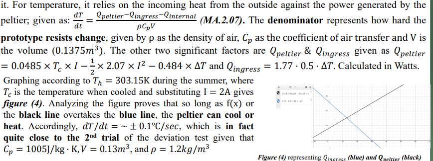
The equation for the change in temperature with respect to time was discussed. In this one particular example a graph of the relation between two opposing energy variables— Q ingress the blue line and Q peltier the black line—is shown. By priorly measuring the volume of the system and the internal energy (in this case only heat is predominant) and using norm values for the rest of equation’s variables such as air density and air transfer (Q peltier is something you control through the ESP32 analog output {the stronger the signal the stronger it cools down the system}) Q ingress was the incoming heat from the electric components and the system passively heating up from its surrounding environment. This equation and graph helped determine when our system was efficient enough to overcome ingress and cool down the interior and also the minimum temperature we could reach (determined to be the intersection point between the two lines) However, this wasn’t the most perfect analysis paragraph. See, the graph was a little miniscule making it hard to see and understand clearly, as well as the fact that this is an analysis section in the poster (where you are allowed to cut down on the definitions and explanations by including them in the presentation) which happened to be a little bit crammed. However, in the portfolio Analysis it was way clearer with the necessary distinctions and definitions.
هنا اتناقشت معادلة تغيّر درجة الحرارة مع الزمن. وفي المثال ده بالذات معروضgraph للعلاقة بين اتنينenergy variables عكس بعض:Q ingress (الخط الأزرق) وQ peltier (الخط الأسود). بقياس حجم الـsystem والطاقة الداخلية قبلها (وفي الحالة دي الحرارة هي الغالبة)، واستخدام القيم المعيارية لباقي متغيرات المعادلة زي كثافة الهوا وانتقال الهوا (والـQ peltier ده حاجة بتتحكم فيها عن طريق الـanalog output بتاع الـESP32 ؛ كل ما الإشارة تقوى كل ما يبرّد الـsystem أكتر)، والـQ ingress هو الحرارة الداخلة من المكونات الكهربية ومن تسخين الـsystem لنفسه بشكل سلبي من البيئة اللي حواليه. المعادلة والـgraph دول ساعدوا نحدد إمتى الـ system بقى كفء كفاية إنه يتغلب على الـingress ويبرّد من جوه، وكمان أقل درجة حرارة نقدر نوصلها (اللي طلعت نقطة تقاطع الخطين). بس دي ماكانتش أكمل فقرة تحليل؛ الـgraph كان صغير شوية فصعب يتشاف ويتفهم بوضوح، وكمان ده كانanalysis section في الـposter (اللي مسموح فيه تقلل التعريفات والشرح وتحطهم في الـ)presentation فكان متزحم شوية. لكن في الـAnalysis بتاع الـportfolio كان أوضح بكتير ومعاه الفروق .والتعريفات اللازمة
The general thought process behind actually doing all this requires you to be able to take your results, your prototype and your design requirements and combine all of these into one solid idea, mixing everything together, adding in a little bit of “Element X” (as in, references and citations that support your claims), and a bit of rhetorical thinking alongside new insights and advantages your project has provided, for example:
طريقة التفكير العامة ورا كل ده إنك تقدر تاخد النتايج والـprototype والـdesign requirements وتجمعهم كلهم في فكرة واحدة قوية، تخلط كل حاجة مع بعض، وتضيف شوية"Element X" (يعنيreferences وcitations بتدعم كلامك)، وشوية تفكير إقناعي(rhetorical) معinsights .جديدة ومميزات قدّمها مشروعك :ًمثلا
“This prototype model was particularly impressive at extracting heavy metals from water, giving the water a heavy metal purity of >99.9%.”
So long as the bolded words aren’t already in the results area and this is a conclusion from your results through an equation you used during your analysis, then this is a new insight. You concoct all of these to proceed into your concluding phase.
طالما الكلام اللي عليهbold مكانش مكتوب فالresults و ده استنتاج من النتايج بتاعتك (يعني حاجة ممكن النتايج بتاعتك كانت بتلقح عليها لكن مش هتتفهم على طول), و انت شرحتها فالanalysis باستخدام قوانين و هكذا, ف ده كده فعلا منظور جديد للمشروع بتاعك اوnew insight! انت بتجمع كل الحجات ديه عشان توصل للمرحلة الخاتمة
That’s generally it regarding your analysis!
وده تقريباً كل حاجة عن الـanalysis!
Important notes!!!: ًملاحظات مهمة جدا
You’re going to be putting little parentheses next to text that links to something in your curriculum like this:
:هتحط أقواس صغيرة جنب الكلام اللي بيربط بحاجة في المنهج بتاعك، زي كده
“This makes the process of reverse osmosis to filter the water harder and consumes more energy in the filtration process, according to (CH.2.02)”
You need to reference curricular learning outcomes at a minimum of 5 learning outcomes in your analysis.
لازم تعملreference لـ5 learning outcomes على الأقل من المنهج في الـanalysis .بتاعك
Regarding the grand challenges themselves, you want to actually incorporate them into your analysis, talking about how your results solved that challenge, and if possible, if applied in real life, provide insight on how long it would take/how much it would cost and how effective it would be to apply your capstone. (conclusion or ending phase)
بالنسبة للـgrand challenges نفسها، لازم تدخّلها فعلاً في الـanalysis ، وتتكلم إزاي نتايجك حلّت الـchallenge ده، ولو ينفع، لو اتطبق في الحقيقة، تدّيinsight عن هياخد وقت قد إيه، وهيتكلف قد إيه، وهيبقى فعّال قد إيه تطبيق الـcapstone بتاعك (وده في الـconclusion أو الـending phase).
In-text citation is important and especially mention reference books or research papers of origin in regard to equations.
الـIn text citation مهم، وخصوصاً إنك تذكر الكتب المرجعية أو الـresearch papers اللي جات منها الـequations .
Correctly and concisely label graphs and figures whilst sizing them up enough for someone to read at a distance.
اعملlabel للـgraphs والـfigures بشكل صح ومختصر، وكبّرها كفاية إن حد يقدر يقرأها من .بعيد
Do not re-insert the results table here, discuss them instantly.
.ماتحطش جدول النتايج تاني هنا؛ ناقش النتايج على طول
Do not leave a quantity or phenomena undiscussed or unanalyzed
.ماتسيبش أي كمية أو ظاهرة من غير مناقشة أو تحليل
There will be instances where some things are just measurable with no clear way to predict or control, simply stating this fact is sufficient in those cases.
هيبقى فيه حالات بعض الحاجات فيها بتتقاس وبس ومفيش طريقة واضحة تتوقعها أو تتحكم فيها؛ في .الحالات دي كفاية إنك تقول الحقيقة دي
Do not make random graphs and relations between variables independent of each other. An energy to air humidity graph makes no sense and has no value to this section, please don’t just inflate your writing for no reason.
ماتعملشgraphs عشوائية وعلاقات بينvariables مالهاش علاقة ببعض.graph بين الطاقة .ورطوبة الهوا مثلاً مالوش معنى ومالوش قيمة في الجزء ده؛ لو سمحت ماتنفخش الكتابة من غير سبب
The following is an entire analysis & discussion: مثال كامل لـAnalysis & Discussion {
The test results demonstrate that the device was designed successfully to address the grand challenges and solve the core problem, which is technological advancements and waste recycling. The project mainly solves the problem of electronic waste, which typically releases heavy metals into the environment through soil and water. This affects public health, especially in water, because it is the main source of life. Moreover, by increasing the amount of the leached electronic waste in the water, the molarity (concentration) of the heavy metals increases, which increases the osmotic pressure because it is directly proportional to the molarity, where the formula of the osmotic pressure is 𝚷= 𝒊𝑴𝑹𝑻, where 𝒊 is the van't Hoff factor, 𝑴 is the molarity, 𝑹 is the ideal gas constant, and 𝑇 is the temperature in Kelvin. This makes the process of reverse osmosis to filter the water harder and consumes more energy in the filtration process, according to (CH.2.02).
To address this problem, it was decided to make a scientific device, which is an oscilloscope, but all its electronic components must be recycled. The prototype handles the readings following four stages, which are the filtering stage, the amplifying stage, the DC bias stage, and the digital processing stage. The first three stages are focused on hardware, meanwhile, the last stage is focused on computation and software. This device graphs an input analog signal and using a certain mode, can output certain variables like the frequency, amplitude, and the time of a period (multiplicative inverse of frequency). The results provided are shown in Table (3.02).
These results are a direct product of a complex mathematical computation (software) called a Fast Fourier Transform (hereinafter referred to as FFT). This computation turns a complex wave into all its constituent waves, which is a law of summation of three main constituents, a DC bias (a DC component which is always the first sample and is never the peak frequency nor the peak amplitude), a sum of cosine waves, and sum of sine waves. When an FFT process is called on a complex signal (same as a polynomial) (MA.2.01) incoming from the AUX input, it turns it into a cosine wave in one set of variables (called the REAL SET OF DATA), and a sine wave in the other set (called the IMAGINARY SET OF DATA). In both, a set of frequencies is plotted against an amplitude. The highest amplitude out of all is the frequency of the input wave. If the input signal were to be recalculated or reformed, it would be a summation of the DC and the two trigonometric functions. This reformation is given as: 𝝎(𝒕) = 𝒂𝒐𝒇𝒇𝒔𝒆𝒕+ ∑𝒂𝒊⋅𝒄𝒐𝒔(𝟐𝝅𝒇𝒊𝒕+ 𝝓𝒊) + ∑𝒂𝒋⋅𝒔𝒊𝒏(𝟐𝝅𝒇𝒋𝒕+ 𝝓𝒋), where 𝒂𝒐𝒇𝒇𝒔𝒆𝒕 is the DC bias offset, 𝒂𝒊 is the 𝒊𝒕𝒉 amplitude for the set of all amplitudes, 𝒇𝒊 is the frequency at that amplitude, and 𝝓𝒊 is the phase of the wave (horizontal transformation). Instead of summing up everything to achieve the complex wave, the most important part would be the wave with the highest frequency. Utilizing the ArduinoFFT library on the microcontroller, the complex wave was dissolved into a set of frequencies (TRANSFORMATION OF TIME DOMAIN TO FREQUENCY DOMAIN as shown in figure (4.01)) with their corresponding amplitudes. The frequency with the highest amplitude was chosen as this frequency was the result of the amplification and the hardware stage. This is shown in figure (4.02).
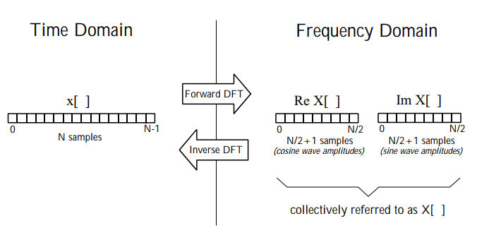
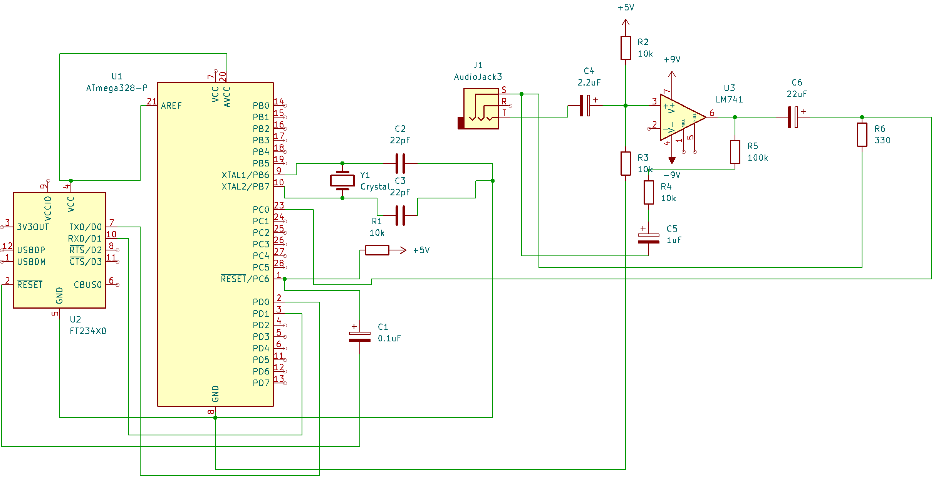
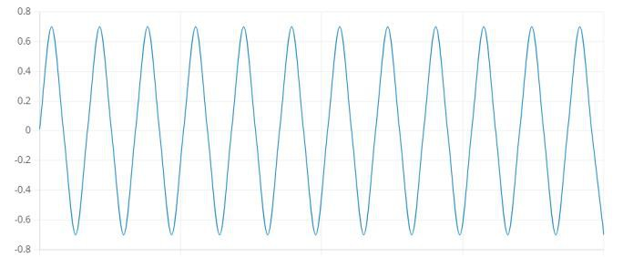
For the
hardware stage, as shown in the methods section, the prototype had two main stages of building, that’s because Arduinos cannot be recycled: however, it’s easy to find their microcontroller for reuse. Therefore, by following the
Figure (4.01), the forward and inverse
transformation of a sample into its
Figure (4.02), the simplified wave of
the maximum frequency and amplitude of a complex wave of
frequency 1000Hz on the serial
plotter of the Arduino IDE.
Figure (4.03), the schematic of the entire
prototype.
datasheet, a miniature Arduino development board was constructed. Capacitors (PH.2.05) were used as a way to provide an extremely stable 16MHz speed or oscillation (using the crystal oscillator) to increase the processing speed of the microcontroller without damaging it. They were also used in the amplification stage for signal attenuation and filtering by making high-pass filters whose cutoff frequencies depended on the capacitors and resistors, where 𝑓𝑐𝑢𝑡𝑜𝑓𝑓= 1/2𝜋𝑅𝐶 (MA.2.02). The resistors were wired in parallel (PH.2.04) to the capacitor. The chosen frequency to be attenuated was ≈ 16𝐻𝑧. This had to be equal across all high-pass filters. This related to the accuracy design requirement as this boosted the accuracy and cancelled any low-frequency unwanted signal. The schematic for the entire prototype is shown in figure (4.03).
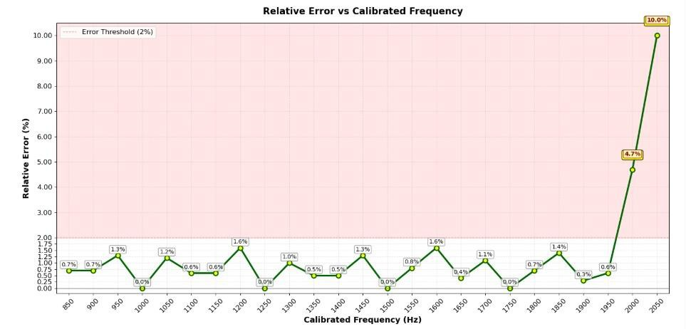
Further analysis showed that there was a consistent error as shown in figure (4.04), this was due to the limitations presented by the Nyquist frequency, which states that the maximum readable frequency is half of the sampling frequency (4000Hz) after 2000𝐻𝑧, the accuracy decreases substantially. This sampling frequency is appropriate because the number of samples is 128. Regarding the entire prototype, its power consumption mostly relied on the ATMega328P because the AUX input had negligible current and voltage output. The ATMega328P pulled in a consistent 5V and a consistent maximum current of 200mA (PH.2.03), according to the law of power: 𝑷= 𝑰𝑽, Therefore, the power consumption of the ATMega328 is exactly 1 watt maximum. }
Figure (4.04), graph representing errors versus calibrated frequencies incremented at 50Hz per
measurement.
Recommendations
The Recommendations section explains how the project could be improved in the future and how the selected solution could become more practical for real-life use. Recommendations should not simply repeat things the team should have done during the project; instead, they should focus on future improvements that were not realistically achievable because of limitations such as cost, available equipment, time, safety, scale, or technical complexity.
الRecommendations بتشرح إزاي المشروع ممكن يتطور ويتحسن في المستقبل، وإزاي الحل اللي اخترتوه .ممكن يبقى أكثر عملية وقابل للتطبيق علي أرض الواقع
المهم هنا إن الـRecommendations ,مش مجرد ليست بالحاجات اللي كان المفروض تعملوها أثناء المشروع يعني متجيش تقول “ كان المفروض نعمل فولان اكتر" و يلا عك بقى و خلاص, ركّز على تحسينات مستقبلية ماكانش واقعي إنكم تنفذوها بسببlimitations زي التكلفة، الأجهزة المتاحة، الوقت، الأمان، حجم الـPrototype ، أو .التعقيد التقني, كذلك
Each recommendation should answer three questions:
1. What should be improved?
Clearly state the specific improvement being proposed.
2. Why would it improve the project?
Explain what problem, limitation, or weakness it would solve and how it would make the prototype or real-life application better.
3. Why wasn't it done in this project?
Give a realistic reason why the team could not implement it, such as:
High cost
Lack of specialized equipment
Limited time
Limited access to materials
Safety concerns
Prototype scale
Technical complexity
Lack of sufficient testing conditions
A strong recommendation therefore follows this general pattern:
Future improvement → Benefit → Reason it was not implemented
إيه اللي محتاج يتحسن؟ .حدد بالظبط التحسين اللي بتقترحه
ليه التحسين ده هيخلي المشروع أحسن؟
اشرح المشكلة أو الـlimitation أو الـweakness اللي التحسين ده هيحلها، وإزاي هيخلي الـPrototype أو .استخدام الحل في تطبيق أرض الواقع أفضل
ليه معملتوش التحسين ده بنفسكم في المشروع؟ :ادّي سبب منطقي يوضح ليه ماكانش ممكن تنفذوه وقتها، زي
التكلفة العالية
مفيش أجهزة متخصصة متاحة
الوقت كان محدود
صعوبة الوصول للمواد المطلوبة في مصر
مشاكل متعلقة بامان الطالب
حجم الـPrototype كان صغير
التعقيد التقني
يعني من الاخر، الـRecommendation :القوية بتمشي كده تحسين مستقبلي → فايدته → ليه ما اتنفذش في المشروع
As a tip, it is nice to start this section with a short introductory sentence explaining that the prototype demonstrated the feasibility of the selected solution but that further improvements could be implemented to either the prototype itself or its large-scale implementation, then, present 3–5 specific recommendations, preferably as bullet points.
Each recommendation should be concise but contain enough explanation to show why the improvement matters and why it was beyond the scope of the current project.
Tip صغير حلو تبدأ الrecommendations بجملة قصيرة توضّح إن الـPrototype أثبت إن الحل قابل للتنفيذ من حيث المبدأ، لكن لسه ممكن يتعمله تحسينات، سواء في الـPrototype نفسه أو في تطبيقه على نطاق واسع علي أرض .الواقع
بعد كده، قدّم3–5 Recommendations محددة، ويفضل تكون في شكلBullet Points .عشان تبقى سهلة في القراءة
كلRecommendation تكون مختصرة، بس فيها شرح كفاية يوضح ليه التحسين ده مهم وليه كان خارج نطاق .المشروع الحالي
Examples of types of recommendations to consider
Prototype improvement: Suggest a better component, stronger material, improved sensor, more accurate actuator, improved circuit, or more advanced control system.
Automation/control/viability: Suggest improvements that would make the system more autonomous, responsive, or capable of adapting to different conditions.
Scaling: Explain how the prototype could be adapted from a small demonstration into a larger mainstream application, and what infrastructure or technology would be needed, or a better location to implement it.
Economic/environmental improvement: Recommend ways to reduce operating costs, material consumption, water usage, waste, or environmental impact.
Here is an example of a full recommendations section:
Recommendations
The experience gained throughout the construction of the prototype has necessitated the inclusion of specific recommendations for future improvement and sustainability. There have been many pitfalls during the earliest stages during the prototype building, and the following recommendations illustrate the correct steps and protocols needed in avoiding them. The recommendations are:
Oscilloscopes are expensive and hard to come by in Egypt, but they are need to calculate the frequency and the power factor of the AC output, in order to determine the real power consumed from the current under the given load. This will help with correcting the power factor through choosing the correct capacitance of the capacitors after the full-bridge rectification using the diodes.
Using microcontrollers and microchips such as Arduino-based chips, to take measurements and send real-time feedback of the water jet’s flow rate and velocity, the turbine’s RPM and the temperatures at the hot and cold junctions of the Peltier modules.
The Toshka Lakes region presents an ideal environment for future deployment of a large-scale version of the prototype, as it offers both strong solar irradiance and a continuous freshwater source, making it perfect for activating both the hydroelectric and thermoelectric components of the system, additionally, choosing this location is strategic due to its remoteness and agricultural importance, making it a strong candidate for decentralized energy support in non-centralized areas of Egypt such as upper Egypt.
For future large-scale applications, the system should be tested using more durable turbine materials and larger-scale water flow setups to reflect real environmental conditions. Since high efficiency thermoelectric modules and industrial-grade components were too costly for our prototype, they should be introduced gradually in the real-life application to boost performance. The design should also be adapted into a modular setup that allows for easier assembly and maintenance in rural areas. This would make the system more practical for real deployment without needing massive infrastructure.
Learning Transfer
The following is a rule of thumb that seems to be a recurring question during evaluations:
:دي قاعدة عامة لسؤال بيتكرر كتير في التقييمات
Learning Transfer is what you transfer over and use in your project
الـLearning Transfer .هو اللي بتنقله وتستخدمه في مشروعك
Learning Outcomes is the material you study and should learn by the end of this class.
الـLearning Outcomes .هي المادة اللي بتذاكرها والمفروض تكون اتعلمتها في آخر المادة
This is going to be a short section since everything is almost all the same, so it’s going to be like a template.
ده هيبقى جزء قصير، لأن كل حاجة فيه تقريباً شبه بعض، فهيبقى عامل زيtemplate .
Do note: THIS IS NOT AN ACTUAL TEMPLATE THAT YOU NEED TO FOLLOW, DO YOUR OWN THING, BUT THIS IS AN EXAMPLE OF WHAT WE’VE COLLECTIVELY DONE AND TURNED OUT TO BE GOOD.
خد بالك: ده مشtemplate .لازم تمشي عليه، اعمل بطريقتك، بس ده مثال على اللي عملناه كلنا وطلع كويس
Another note: this is NOT written in a table, the guide that says this meant it for the poster and the reference table at the end of the analysis is EXTREMELY space- eating; therefore, we discarded that ever since, now, it’s way better to write in your own format.
:ملحوظة تانية دهمش بيتكتب فيtable؛ ال guide اللي بيقول كده كان يقصد الـposter ، والـreference table اللي في آخر الـanalysis بياكل مساحة ًجدا ، عشان كده بطّلنا نعمله من ساعتها، ودلوقتي أحسن بكتير إنك تكتب .بالشكل بتاعك
You should order your learning transfers depending on subject, so:
لازم ترتّب الـlearning transfers :بتاعتك حسب المادة، يعني
Math LOs used, Chemistry LOs used, etc., while grouping them up together.
Then you’re going to write the name of the Learning Outcome with the code in between parentheses, like:
بعدين هتكتب اسم الـLearning Outcome والـcode :بتاعه بين قوسين، زي
Earth Science – Water Systems (ES.2.01)
You then list down the concepts you’ve used while transferring the learning outcome to reality and practicality. An extremely viable example of this would be:
بعدين تكتب الـconcepts اللي استخدمتها وانت بتنقل الـlearning outcome للواقع والتطبيق. ومثال ممتاز على :ده
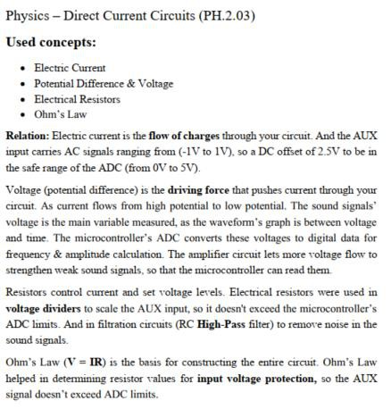
This is a good example because it takes the concept, explains it, rips directly from the project, links the concept to the project and how it was used or how it relates to what you’re doing.
ده مثال كويس لأنه بياخد الـconcept ، ويشرحه، وياخد من المشروع مباشرة، ويربط الـconcept بالمشروع .وإزاي اتستخدم أو علاقته باللي بتعمله
Pro tips while writing these: نصايح احترافية وانت بتكتبها
Use the skills and capstone connection sections of the curriculum file to know what to write about or what exactly needs to be linked.
استخدم جزئي الـskills والـcapstone connection في الـcurriculum file عشان تعرف تكتب .عن إيه أو إيه بالظبط اللي محتاج يترابط
You may add to the “Used Concepts” classification, “Learnt Skills” or “Skills Used”.
ممكن تضيف للتصنيف بتاع"Used Concepts" تصنيفات زي"Learnt Skills" أوSkills"
Used" .
More examples: أمثلة تانية
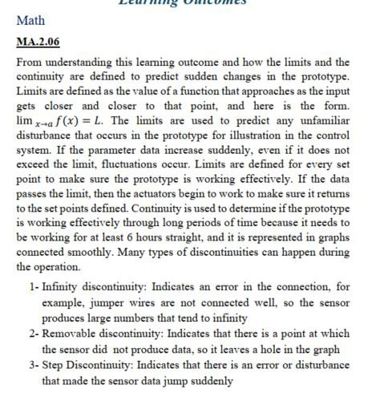
List of Sources in APA Format
Throughout writing the portfolio you should Save all sites as you write because you will need to write them in this section in APA7 format. Send them in a group or save them in a word file as you want.
طول ما انت بتكتب الـportfolio احفظ كل المواقع أول بأول، لأنك هتحتاج تكتبها في الجزء ده بصيغةAPA7 .
ابعتها على جروب أو احفظها فيword file ، زي ما تحب.
How to cite in apa7 format: إزاي تعملcitation بـAPA7
General format (Author, date, title, Source)
Author: List last name first, followed by initials (e.g., Smith, J. A.).
Author: اكتب اسم العيلة(last name) .الأول وبعده الحروف الأولى من الاسم
Date: Enclose the publication year in parentheses, (e.g., (2024). ).
Date: .حط سنة النشر بين قوسين
Title: Use sentence case for book and article titles (capitalize only the first word and proper nouns). Italicize books and journal titles.
Title: استخدم الـsentence case في عناوين الكتب والمقالات (يعني أول حرف في أول كلمة بس يبقىcapital ، والأسماء العَلَم). وخلي عناوين الكتب والمجلات العلميةitalic.
Source: URL/DOI
Source: الـURL أو الـDOI.
General tips: نصايح عامة
1) Avoid .com links and Wikipedia because their information is unauthorized
ابعد عن لينكات الـ.com والـWikipedia .لأن معلوماتهم مش موثّقة
2) For research papers and books you may find them in .com cites so don’t put the .com URL. You will find in the research paper something called the DOI link use it.
(if you didn’t find it you can ask AI to JUST the DOI link NOT to do the whole citation for you)
الـresearch papers والكتب ممكن تلاقيها على مواقع.com ، فماتحطش لينك الـ.com . هتلاقي في الـresearch paper حاجة اسمهاDOI link ، استخدمه. (ولو مالقيتهوش ممكن تطلب من الـAI يجيبلك الـDOI link بس ،مش إنه يعملك الـcitation .)كلها
3) Don’t make AI do the citation for you or use a citation generator. Because they do a lot of mistakes and often it doesn’t complete the citation. And also they are recognizable by evaluators and you will lose marks.
ماتخليش الـAI يعملك الـcitation ، وماتستخدمشcitation generator ً، لأنهم بيغلطوا كتير وغالبا مابيكمّلوش الـcitation ، وكمان المقيّمين بيعرفوهم وهتخسر درجات.
4) Sometimes in research papers and books it is better to add the volume number and the page range where the information you got exists.
ساعات في الـresearch papers والكتب الأحسن تضيف رقم الـvolume ونطاق الصفحات اللي .فيها المعلومة اللي أخدتها
Examples: أمثلة
D. N. Rockmore, "The FFT: An Algorithm the Whole Family Can Use" in Computing in Science & Engineering, vol. 2, no. 01, pp. 60-64, January/February 2000, https://doi.org/10.1109/5992.814659
Kamisuna, T. (2025, August 7). Japan’s “urban mining” and economic security.